| SimName | ModelName | ExpName | RepNum | ResponseType | ResponseID | ResponseName | Statistic.Name |
|---|---|---|---|---|---|---|---|
| Pallet Processing | MainModel | Two Workers | 1 | TWResponse | 7 | NumBusyWorkers | NumBusyWorkers |
| Pallet Processing | MainModel | Two Workers | 1 | TWResponse | 9 | PalletQ:NumInQ | PalletQ:NumInQ |
| Pallet Processing | MainModel | Two Workers | 1 | Response | 10 | PalletQ:TimeInQ | PalletQ:TimeInQ |
| Pallet Processing | MainModel | Two Workers | 1 | TWResponse | 11 | Num Pallets at WC | Num Pallets at WC |
| Pallet Processing | MainModel | Two Workers | 1 | Response | 12 | System Time | System Time |
| Pallet Processing | MainModel | Two Workers | 1 | Response | 14 | Total Processing Time | Total Processing Time |
5 Analyzing and Accessing Simulation Output
LEARNING OBJECTIVES
To be able to recognize the different types of statistical quantities used within and produced by simulation models.
To be able to analyze finite horizon simulations via the method of replications.
To be able to analyze infinite horizon simulations via the method of batch means and the method of replication-deletion.
To be able to compare simulation alternatives and make valid decisions based on the statistical output of a simulation.
To be able to access output from KSL simulation models in many different forms.
Because the inputs to the simulation are random, the outputs from the simulation are also random. You can think of a simulation model as a function that maps inputs to outputs. This chapter presents the statistical analysis of the outputs from simulation models.
In addition, a number of issues that are related to the proper execution of simulation experiments are presented. For example, the simulation outputs are dependent upon the input random variables, input parameters, and the initial conditions of the model. Initial conditions refer to the starting conditions for the model, e.g. whether or not the system starts “empty and idle”. The effect of initial conditions on steady state simulations will be discussed in this chapter.
Input parameters are related to the controllable and uncontrollable factors associated with the system. For a simulation model, all input parameters are controllable; however, in the system being modeled we typically have control over only a limited set of parameters. Thus, in simulation you have the unique ability to control the random inputs into your model. This chapter will discuss how to take advantage of controlling the random inputs.
Input parameters can be further classified as decision variables. That is, those parameters of interest that you want to change in order to test model configurations for decision-making. The structure of the model itself may be considered a decision variable when you are trying to optimize the performance of the system. When you change the input parameters for the simulation model and then execute the simulation, you are simulating a different design alternative.
This chapter describes how to analyze the output from a single design alternative and how to analyze the results of multiple design alternatives. The focus of this chapter is on understanding the types of data produced by a discrete-event simulation and how to analyze that data. The KSL facilitates the capture and analysis of various statistical quantities. This chapter will present the most common and useful approaches to instrumenting a model and extracting the captured data. Although the focus will be on demonstrating this functionality on simple models, you will readily see how easily the approaches can be scaled up to larger models with substantial output requirements.
Note
This chapter provides a series of example Kotlin code that illustrates the use of KSL constructs for working with data generated from KSL models. The full source code of the examples can be found in the accompanying KSLExamples project associated with the KSL repository. The files for each example of this chapter can be found here.
To begin the discussion you need to build an understanding of the types of statistical quantities that may be produced by a simulation experiment.
5.1 Types of Statistical Variables
A simulation experiment occurs when the modeler sets the input parameters to the model and executes the simulation. This causes events to occur and the simulation model to evolve over time. During the execution of the simulation, the behavior of the system is observed and various statistical quantities computed. When the simulation reaches its termination point, the statistical quantities are summarized in the form of output reports.
A simulation experiment may be for a single replication of the model or may have multiple replications. A replication is the generation of one sample path which represents the evolution of the system from its initial conditions to its ending conditions. If you have multiple replications within an experiment, each replication represents a different sample path, starting from the same initial conditions and being driven by the same input parameter settings. Because the randomness within the simulation can be controlled, the underlying random numbers used within each replication of the simulation can be made to be independent. Thus, as the name implies, each replication is an independently generated “repeat” of the simulation.
Within a single sample path (replication), the statistical behavior of the model can be observed.
Definition 5.1 (Within Replication Statistic) The statistical quantities collected during a replication are called within replication statistics.
Definition 5.2 (Across Replication Statistic) The statistical quantities collected across replications are called across replication statistics. Across replication statistics are collected based on the observation of the final values of within replication statistics.
Within replication statistics are collected based on the observation of the sample path and include observations on entities, state changes, etc. that occur during a sample path execution. The observations used to form within replication statistics are not likely to be independent and identically distributed. Since across replication statistics are formed from the final values of within replication statistics, one observation per replication is available. Since each replication is considered independent, the observations that form the sample for across replication statistics are likely to be independent and identically distributed. The statistical properties of within and across replication statistics are inherently different and require different methods of analysis. Of the two, within replication statistics are the more challenging from a statistical standpoint.
As we saw in Section 4.3 of Chapter 4, there are two primary types of observations: tally and time-persistent. Tally data represent a sequence of equally weighted data values that do not persist over time. This type of data is associated with the duration or interval of time that an object is in a particular state or how often the object is in a particular state. As such it is observed by marking (tallying) the time that the object enters the state and the time that the object exits the state. Once the state change takes place, the observation is over (it is gone, it does not persist, etc.). If we did not observe the state change, then we would have missed the observation. The time spent in queue, the count of the number of customers served, whether or not a particular customer waited longer than 10 minutes are all examples of tally data. We have used the KSL Response class to collect this type of data.
Time-persistent observations represent a sequence of values that persist over some specified amount of time with that value being weighted by the amount of time over which the value persists. These observations are directly associated with the values of the state variables within the model. The value of a time-persistent observation persists in time. For example, the number of customers in the system is a common state variable. If we want to collect the average number of customers in the system over time, then this will be a time-persistent statistic. While the value of the number of customers in the system changes at discrete points in time, it holds (or persists with) that value over a duration of time. This is why it is called a time-persistent variable. We have used the KSL TWResponse class to collect this type of data.
Figure 5.1 illustrates a single sample path for the number of customers in a queue over a period of time. From this sample path, events and subsequent statistical quantities can be observed.
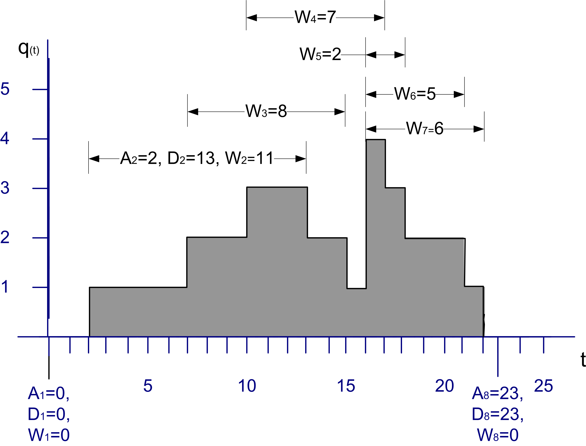
Let \(A_i \; i = 1 \ldots n\) represent the time that the \(i^{th}\) customer enters the queue
Let \(D_i \; i = 1 \ldots n\) represent the time that the \(i^{th}\) customer exits the queue
Let \(W_i = D_i - A_i \; i = 1 \ldots n\) represent the time that the \(i^{th}\) customer spends in the queue
Thus, \(W_i \; i = 1 \ldots n\) represents the sequence of wait times for the queue, each of which can be individually observed and tallied. This is tally type data because the customer enters a state (the queued state) at time \(A_i\) and exits the state at time \(D_i\). When the customer exits the queue at time \(D_i\), the waiting time in queue, \(W_i = D_i - A_i\) can be observed or tallied. \(W_i\) is only observable at the instant \(D_i\). This makes \(W_i\) tally based data and, once observed, its value never changes again with respect to time. Tally data is most often associated with an entity that is moving through states that are implied by the simulation model. An observation becomes available each time the entity enters and subsequently exits the state.
With tally data it is natural to compute the sample average as a measure of the central tendency of the data. Assume that you can observe \(n\) customers entering and existing the queue, then the average waiting time across the \(n\) customers is given by:
\[\bar{W}(n) = \dfrac{1}{n} \sum_{i=1}^{n} W_{i}\]
Many other statistical quantities, such as the minimum, maximum, and sample variance, etc. can also be computed from these observations. Unfortunately, within replication data is often (if not always) correlated with respect to time. In other words, within replication observations like, \(W_i \, i = 1 \ldots n\), are not statistically independent. In fact, they are likely to also not be identically distributed. Both of these issues will be discussed when the analysis of infinite horizon or steady state simulation models is presented.
The other type of statistical variable encountered within a replication is based on time-persistent observations. Let \(q(t), t_0 < t \leq t_n\) be the number of customers in the queue at time \(t\). Note that \(q(t) \in \lbrace 0,1,2,\ldots\rbrace\). As illustrated in Figure 5.1, \(q(t)\) is a function of time (a step function in this particular case). That is, for a given (realized) sample path, \(q(t)\) is a function that returns the number of customers in the queue at time \(t\).
In simulation, we compute the time-average:
\[\bar{L}_q(n) = \frac{1}{t_n - t_0} \int_{t_0}^{t_n} q(t) \mathrm{d}t\]
This function represents the average with respect to time of the given state variable. This type of statistical variable is called time-persistent because \(q(t)\) is a function of time (i.e. it persists over time).
Tally-based statistics and time-persistent statistics both are collected during a replication and form within replication statistical quantities. When we compute statistics across the replications, we call these statistics across replication statistics.
Now that we understand the type of data that occurs within a replication, we need to develop an understanding for the types of simulation situations that require specialized statistical analysis. The next section introduces this important topic.
5.2 Types of Simulation With Respect To Output Analysis
When modeling a system, specific measurement goals for the simulation responses are often required. The goals, coupled with how the system operates, will determine how you execute and analyze the simulation experiments. In planning the experimental analysis, it is useful to think of simulations as consisting of two main categories related to the period of time over which a decision needs to be made:
- Finite horizon
-
In a finite-horizon simulation, a well define ending time or ending condition can be specified which clearly defines the end of the simulation. Finite horizon simulations are often called terminating simulations, since there are clear terminating conditions.
- Infinite horizon
-
In an infinite horizon simulation, there is no well defined ending time or condition. The planning period is over the life of the system, which from a conceptual standpoint lasts forever. Infinite horizon simulations are often called steady state simulations because in an infinite horizon simulation you are often interested in the long-term or steady state behavior of the system.
For a finite horizon simulation, an event or condition associated with the system is present which indicates the end of each simulation replication. This event can be specified in advance or its time of occurrence can be a random variable. If it is specified in advance, it is often because you do not want information past that point in time (e.g. a 3 month planning horizon). It might be a random variable in the case of the system stopping when a condition is met. For example, an ending condition may be specified to stop the simulation when there are no entities left to process. Finite horizon simulations are very common since most planning processes are finite. A few example systems involving a finite horizon include:
Bank: bank doors open at 9am and close at 5pm
Military battle: simulate until force strength reaches a critical value
Filling a customer order: suppose a new contract is accepted to produce 100 products, you might simulate the production of the 100 products to see the cost, delivery time, etc.
For a finite horizon simulation, each replication represents a sample path of the model for one instance of the finite horizon. The length of the replication corresponds to the finite horizon of interest. For example, in modeling a bank that opens at 9 am and closes at 5 pm, the length of the replication would be 8 hours.
In contrast to a finite horizon simulation, an infinite horizon simulation has no natural ending point. Of course, when you actually simulate an infinite horizon situation, a finite replication length must be specified. Hopefully, the replication length will be long enough to satisfy the goal of observing long run performance. Examples of infinite horizon simulations include:
A factory where you are interested in measuring the steady state throughput.
A hospital emergency room which is open 24 hours a day, 7 days of week.
A telecommunications system which is always operational.
Infinite horizon simulations are often tied to systems that operate continuously and for which the long-run or steady state behavior needs to be estimated.
Because infinite horizon simulations often model situations where the system is always operational, they often involve the modeling of non-stationary processes. In such situations, care must be taken in defining what is meant by long-run or steady state behavior. For example, in an emergency room that is open 24 hours a day, 365 days per year, the arrival pattern to such a system probably depends on time. Thus, the output associated with the system is also non-stationary. The concept of steady state implies that the system has been running so long that the system’s behavior (in the form of performance measures) no longer depends on time; however, in the case of the emergency room since the inputs depend on time so do the outputs. In such cases it is often possible to find a period of time or cycle over which the non-stationary behavior repeats. For example, the arrival pattern to the emergency room may depend on the day of the week, such that every Monday has the same characteristics, every Tuesday has the same characteristics, and so on for each day of the week. Thus, on a weekly basis the non-stationary behavior repeats. You can then define your performance measure of interest based on the appropriate non-stationary cycle of the system. For example, you can define Y as the expected waiting time of patients per week. This random variable may have performance that can be described as long-term. In others, the long-run weekly performance of the system may be stationary. This type of simulation has been termed steady state cyclical parameter estimation within (Law 2007).
Of the two types of simulations, finite horizon simulations are easier to analyze. Luckily they are the more typical type of simulation found in practice. In fact, when you think that you are faced with an infinite horizon simulation, you should very carefully evaluate the goals of your study to see if they can just as well be met with a finite planning horizon. The analysis of both of these types of simulations will be discussed in this chapter through examples.
5.3 Analysis of Finite Horizon Simulations
This section illustrates how tally-based and time-persistent statistics are collected within a replication and how statistics are collected across replications. Finite horizon simulations can be analyzed by traditional statistical methodologies that assume a random sample, i.e. independent and identically distributed random variables. A simulation experiment is the collection of experimental design points (specific input parameter values) over which the behavior of the model is observed. For a particular design point, you may want to repeat the execution of the simulation multiple times to form a sample at that design point. To get a random sample, you execute the simulation starting from the same initial conditions and ensure that the random numbers used within each replication are independent. Each replication must also be terminated by the same conditions. It is very important to understand that independence is achieved across replications, i.e. the replications are independent. The data within a replication may or may not be independent.
The method of independent replications is used to analyze finite horizon simulations. Suppose that \(n\) replications of a simulation are available where each replication is terminated by some event \(E\) and begun with the same initial conditions. Let \(Y_{rj}\) be the \(j^{th}\) observation on replication \(r\) for \(j = 1,2,\cdots,m_r\) where \(m_r\) is the number of observations in the \(r^{th}\) replication, and \(r = 1,2,\cdots,n\), and define the sample average for each replication to be:
\[\bar{Y}_r = \frac{1}{m_r} \sum_{j=1}^{m_r} Y_{rj}\]
If the data are time-based then,
\[\bar{Y}_r = \frac{1}{T_E} \int_0^{T_E} Y_r(t) \mathrm{d}t\]
\(\bar{Y}_r\) is the sample average based on the observation within the \(r^{th}\) replication. It is a random variable that can be observed at the end of each replication, therefore, \(\bar{Y}_r\) for \(r = 1,2,\ldots,n\) forms a random sample. Thus, standard statistical analysis of the random sample can be performed.
To make this concrete, suppose that you are examining a bank that opens with no customers at 9 am and closes its doors at 5 pm to prevent further customers from entering. Let, \(W_{rj} j = 1,\ldots,m_r\), represents the sequence of waiting times for the customers that entered the bank between 9 am and 5 pm on day (replication) \(r\) where \(m_r\) is the number of customers who were served between 9 am and 5 pm on day \(r\). For simplicity, ignore the customers who entered before 5 pm but did not get served until after 5 pm. Let \(N_r (t)\) be the number of customers in the system at time \(t\) for day (replication) \(r\). Suppose that you are interested in the mean daily customer waiting time and the mean number of customers in the bank on any given 9 am to 5 pm day, i.e. you are interested in \(E[W_r]\) and \(E[N_r]\) for any given day. At the end of each replication, the following can be computed:
\[\bar{W}_r = \frac{1}{m_r} \sum_{j=1}^{m_r} W_{rj}\]
\[\bar{N}_r = \dfrac{1}{8}\int_0^8 N_r(t)\ \mathrm{d}t\]
At the end of all replications, random samples: \(\bar{W}_r\) and \(\bar{N}_r\) are available from which sample averages, standard deviations, confidence intervals, etc. can be computed. Both of these samples are based on observations of within replication data.
Both \(\bar{W_r}\) and \(\bar{N_r}\) for \(r = 1,2,\ldots,n\) are averages of many observations within the replication. Sometimes, there may only be one observation based on the entire replication. For example, suppose that you are interested in the probability that someone is still in the bank when the doors close at 5 pm, i.e. you are interested in \(\theta = Pr\{N(t = 5 pm) > 0\}\). In order to estimate this probability, an indicator variable can be defined within the simulation and observed each time the condition was met or not. For this situation, an indicator variable,\(I_r\), for each replication can be defined as follows:
\[ I_r = \begin{cases} 1 & N(t = 5 pm) > 0\\ 0 & N(t = 5 pm) \leq 0 \\ \end{cases} \]
Therefore, at the end of the replication, the simulation must tabulate whether or not there are customers in the bank and record the value of this indicator variable. Since this happens only once per replication, a random sample of the \(I_r\) for \(r = 1,2,\ldots,n\) will be available after all replications have been executed. We can use the observations of the indicator variable to estimate the desired probability.
Since the analysis of the system will be based on a random sample, the key design criteria for the experiment will be the required number of replications. In other words, you need to determine the sample size.
Because confidence intervals may form the basis for decision making, you can use the confidence interval half-width in determining the sample size. For example, in estimating \(E[W_r]\) for the bank example, you might want to be 95% confident that you have estimated the true waiting time to within \(\pm 2\) minutes.
Thus, all of the sample size determination methods discussed in Section 3.3.2 of Chapter 3 can be applied.
5.4 Capturing Output for a Simple Finite Horizon Simulation
In this section, we will build a model for a simple finite horizon simulation with a couple of new modeling issues to handle. However, the primary focus of this section is to illustrate how to capture and report statistical results using the KSL. Let’s start with an outline of the example system to be modeled.
Example 5.1 (Pallet Processing Work Center) A truckload of pallets arrives overnight to a facility. Within the truck there are a random number of pallets. The number of pallets can be modeled with a binomial random variable with mean of 80 and a variance of 16. This translates to parameters \(n=100\) and \(p=0.8\). Each individual pallet is unloaded and transported to a work center for processing, one at a time, sequentially until all pallets are delivered. The unloading and transport time is exponentially distributed with a mean of 5 minutes. Once a pallet arrives at the work center it requires 1 of 2 workers to be processed. If a worker is available, the pallet is immediately processed by a worker. If no workers are available, the pallet waits in a FIFO line until a worker becomes available. The time to process the pallet involves breaking down and processing each package on the pallet. The time to process an entire pallet can be modeled with a triangular distribution with a minimum time of 8 minutes, a most likely time of 12 minutes, and a maximum time of 15 minutes. The work at the work center continues until all pallets are processed for the day. The facility manager is interested in how long the pallets wait at the work center and how long it takes for all pallets to be completed on a given day. In addition, the manager is interested in the probability that there is overtime. That is, the chance that the total time to process the pallets is more than 480 minutes.
This example is a finite horizon simulation because there are a finite (but random) number of pallets to be processed such that the simulation will run until all pallets are processed. The system starts with an arrival of a random number of pallets, that are then processed until all pallets are completed. Therefore there is a well defined starting and ending point for the simulation. Although we do not know when the simulation will end, there is a well-specified condition (all pallets processed) that governs the ending of the simulation. Thus, while the time horizon may be random, it is still finite. Conceptually, this modeling situation is very similar to the pharmacy model discussed in Section 4.4.4. Thus, the implementation of the model will be very similar to the pharmacy model example, but with a couple of minor differences to handle the finite number of pallets that arrive and to capture statistics about the total processing time. The full code is available with the examples. This presentation focuses on new concepts.
As for previous modeling, we define and use random variables to represent the randomness within the model.
class PalletWorkCenter(
parent: ModelElement,
numWorkers: Int = 2,
name: String? = null
) :
ModelElement(parent, name = name) {
init {
require(numWorkers >= 1) { "The number of workers must be >= 1" }
}
@set:KSLControl(
controlType = ControlType.INTEGER,
lowerBound = 1.0
)
var numWorkers = numWorkers
set(value) {
require(value >= 1) { "The number of workers must be >= 1" }
require(!model.isRunning) { "Cannot change the number of workers while the model is running!" }
field = value
}
private val myProcessingTimeRV: RandomVariable = RandomVariable(
parent = this,
rSource = TriangularRV(min = 8.0, mode = 12.0, max = 15.0, streamNum = 3), name = "ProcessingTimeRV"
)
val processingTimeRV: RandomVariableCIfc
get() = myProcessingTimeRV
private val myTransportTimeRV: RandomVariable = RandomVariable(
parent = parent,
rSource = ExponentialRV(5.0, 2), name = "TransportTimeRV"
)
val transportTimeRV: RandomVariableCIfc
get() = myTransportTimeRV
private val myNumPalletsRV: RandomVariable = RandomVariable(
parent = parent,
rSource = BinomialRV(0.8, 100, 1), name = "NumPalletsRV"
)
val numPalletsRV: RandomVariableCIfc
get() = myNumPalletsRVNotice that we defined the random variables and assign them to relevant properties within the class body. To capture the total time to process the pallets and the probability of overtime, we define two response variables. Notice that the probability of overtime is implemented as an IndicatorResponse that observes the total processing time.
private val myNumBusy: TWResponse = TWResponse(parent = this, name = "NumBusyWorkers")
val numBusyWorkers: TWResponseCIfc
get() = myNumBusy
private val myUtil: TWResponseFunction = TWResponseFunction(
function = { x -> x/(this.numWorkers) },
observedResponse = myNumBusy, name = "Worker Utilization"
)
val workerUtilization: TWResponseCIfc
get() = myUtil
private val myPalletQ: Queue<QObject> = Queue(parent = this, name = "PalletQ")
val palletQ: QueueCIfc<QObject>
get() = myPalletQ
private val myNS: TWResponse = TWResponse(parent = this, name = "Num Pallets at WC")
val numInSystem: TWResponseCIfc
get() = myNS
private val mySysTime: Response = Response(parent = this, name = "System Time")
val systemTime: ResponseCIfc
get() = mySysTime
private val myNumProcessed: Counter = Counter(parent = this, name = "Num Processed")
val numPalletsProcessed: CounterCIfc
get() = myNumProcessed
private val myTotalProcessingTime = Response(parent = this, name = "Total Processing Time")
val totalProcessingTime: ResponseCIfc
get() = myTotalProcessingTime
private val myOverTime: IndicatorResponse = IndicatorResponse(
predicate = { x -> x >= 480.0 },
observedResponse = myTotalProcessingTime,
name = "P{total time > 480 minutes}"
)
val probOfOverTime: ResponseCIfc
get() = myOverTimeThe main logic of arrivals to the work center and completions of the pallets is essentially the same as previously discussed. The main difference here is that there is a finite number of pallets that need to be created. While there are many ways to represent this situation (e.g. use an EventGenerator), this presentation keeps it simple. The first two lines of this code snippet, capture the functional references for the end of service and end of transport event actions. We have seen this kind of code before. Then, a variable, numToProcess, is defined. This variable will hold the randomly generated number of pallets to process and is assigned in the initialize() method. Within the initialize() method, the transport of the first pallet is scheduled with the provided transport time random variable.
private val endServiceEvent = this::endOfService
private val endTransportEvent = this::endTransport
var numToProcess: Int = 0
override fun initialize() {
numToProcess = myNumPalletsRV.value.toInt()
schedule(eventAction = endTransportEvent, timeToEvent = myTransportTimeRV)
}
private fun endTransport(event: KSLEvent<Nothing>) {
if (numToProcess >= 1) {
schedule(eventAction = endTransportEvent, timeToEvent = myTransportTimeRV)
numToProcess = numToProcess - 1
}
val pallet = QObject()
arrivalAtWorkCenter(pallet)
}The endTransport event action checks to see if there are more pallets to transport and if so schedules the end of the next transport. In addition, it creates a QObject that is sent to the work center for processing via the arrivalAtWorkCenter method. As shown in the following code, the arrival and end of service actions are essentially the same as in the previous pharmacy examples.
private fun arrivalAtWorkCenter(pallet: QObject) {
myNS.increment() // new pallet arrived
myPalletQ.enqueue(pallet) // enqueue the newly arriving pallet
if (myNumBusy.value < numWorkers) { // server available
myNumBusy.increment() // make server busy
val nextPallet: QObject? = myPalletQ.removeNext() //remove the next pallet
// schedule end of service, include the pallet as the event's message
schedule(eventAction = endServiceEvent, timeToEvent = myProcessingTimeRV, message = nextPallet)
}
}
private fun endOfService(event: KSLEvent<QObject>) {
myNumBusy.decrement() // pallet is leaving server is freed
if (!myPalletQ.isEmpty) { // queue is not empty
val nextPallet: QObject? = myPalletQ.removeNext() //remove the next pallet
myNumBusy.increment() // make server busy
// schedule end of service
schedule(eventAction = endServiceEvent, timeToEvent = myProcessingTimeRV, message = nextPallet)
}
departSystem(completedPallet = event.message!!)
}Finally, we have the statistical collection code. The departSystem method captures the time in the system and the number of pallet processed. However, we see something new within a method called replicationEnded()
private fun departSystem(completedPallet: QObject) {
mySysTime.value = (time - completedPallet.createTime)
myNS.decrement() // pallet left system
myNumProcessed.increment()
}
override fun replicationEnded() {
myTotalProcessingTime.value = time
}Recall the overview of how the underlying simulation code is processed from Section 4.4.2.2 of Chapter 4. Step 2(e) of that discussion notes that the actions associated with the end of replication logic is automatically executed. Just like the initialize() method every model element has a replicationEnded() method. This method is called automatically for every model element infinitesimally before the end of the simulation replication. Thus, statistical collection can be implemented without the concern that the statistical accumulators will be cleared after the replication. Observations within the replicationEnded() method are still within the replication (i.e. they produce within replication data). In the above code snippet, the Response variable myTotalProcessingTime is assigned the current simulation time, which happens to be the time at which the processing of the pallets was completed. This occurs because after the appropriate number of transports are scheduled, no further pallets arrive to be processed at the work center. Thus, eventually, there will be no more events to process, and according to Step 2(d) of Section 4.4.2.2, this will cause the execution of the current replication to stop and proceed with any end of replication model logic. Thus, this logic captures the total time to process the pallets. In addition, because an IndicatorResponse was also attached to myTotalProcessingTime the collection of the probability of over time will also be captured. The basic results of the model are as follows:
Statistical Summary Report
| Name | Count | Average | Half-Width |
|---|---|---|---|
| NumBusyWorkers | 10.0 | 1.9174709267367938 | 0.04615844720276659 |
| PalletQ:NumInQ | 10.0 | 7.397061723049351 | 2.18200524048673 |
| PalletQ:TimeInQ | 10.0 | 44.65967086387171 | 12.756611150942986 |
| Num Pallets at WC | 10.0 | 9.314532649786145 | 2.2091925024424928 |
| System Time | 10.0 | 56.32044792861602 | 12.742871337228127 |
| Total Processing Time | 10.0 | 489.20830013021094 | 16.326885695752644 |
| P{total time > 480 minutes} | 10.0 | 0.6 | 0.369408717216522 |
| Num Processed | 10.0 | 80.4 | 2.5054518188054615 |
If you are paying attention to the presentation of previous summary statistics, you will notice that the last summary report is presented in a nice tabular format. This output was actually generated by the KSL class SimulationReporter, which can make MarkDown output. This and additional output capturing will be discussed in the next section.
5.4.1 KSL Functionality for Capturing Statistical Results
This section presents a number of methods that can be used to capture and report the results from a KSL model. The following topics will be covered:
- Automatically capturing within and across replication results to comma separated value files
- Capturing replication data via the
ReplicationDataCollectorclass - Tracing a response variable via the
ResponseTraceclass - Using the
SimulationReporterclass to output results in MarkDown and adjusting the confidence level of the reports - Capturing all simulation results to a database using the
KSLDatabaseObserverclass and illustrating how to get results from the database
These topics will be discussed within the context of the pallet example of the previous section. The main method for running the pallet example was expanded to illustrate additional data collection functionality. It is unlikely that you will want to capture results both as comma separated value files and using a database, but both approaches are illustrated. If you are familiar with database technologies, then using the database will likely serve most if not all of your needs.
fun main() {
val model = Model("Pallet Processing", autoCSVReports = true)
model.numberOfReplications = 10
model.experimentName = "Two Workers"
// add the model element to the main model
val palletWorkCenter = PalletWorkCenter(model)
// demonstrate how to capture a trace of a response variable
val trace = ResponseTrace(palletWorkCenter.numInSystem)
// demonstrate capture of replication data for specific response variables
val repData = ReplicationDataCollector(model)
repData.addResponse(palletWorkCenter.totalProcessingTime)
repData.addResponse(palletWorkCenter.probOfOverTime)
// demonstrate capturing data to database with an observer
val kslDatabaseObserver = KSLDatabaseObserver(model)
// simulate the model
model.simulate()
// demonstrate that reports can have specified confidence level
val sr = model.simulationReporter
sr.printHalfWidthSummaryReport(confLevel = .99)
// show that report can be written to MarkDown as a table in the output directory
var out = model.outputDirectory.createPrintWriter("hwSummary.md")
sr.writeHalfWidthSummaryReportAsMarkDown(out)
println()
//output the collected replication data to prove it was captured
println(repData)
// use the database to create a Kotlin DataFrame
val dataFrame = kslDatabaseObserver.db.acrossReplicationViewStatistics
println(dataFrame)
model.experimentName = "Three Workers"
palletWorkCenter.numWorkers = 3
model.simulate()
out = model.outputDirectory.createPrintWriter("AcrossExperimentResults.md")
kslDatabaseObserver.db.writeTableAsMarkdown("ACROSS_REP_VIEW", out)
}Let’s start with automatically collecting responses within comma separated value (CSV) files and how to find them in the file system.
The first thing to note is how the output from a KSL simulation is organized. The KSL model class allows the user to specify the output directory for the model results. If the user does not specify an output directory, the default directory will be within a folder called kslOutput that will be created within the same folder that the model was executed. That is, the current working directory for the user. Within the kslOutput directory all KSL related work will be stored. In particular, a unique directory derived from the name of the simulation will be created to hold all the results from a particular simulation model’s execution. These locations can be changed, but the defaults are well-specified and useful.
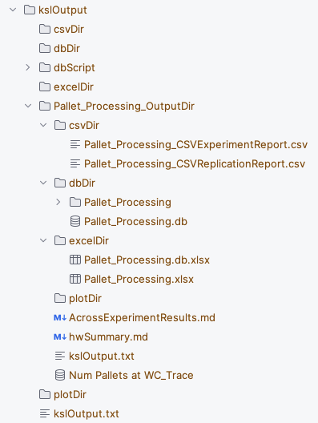
Figure 5.2 illustrates the output directory after running the pallet model. You should see the kslOutput directory and a directory called Pallet_Processing_OutputDir. Within the Pallet_Processing_OutputDir directory there are folders called db and excel. These folders are the default directories for holding database related files and Excel related output files. Within the db folder there is a file called Pallet_Processing.db, which is an SQLite database that was created to hold the KSL simulation results. Then, there are two files called hwSummary.md and kslOutput.txt. There are also two CSV files, two labeled with _ExperimentReport.csv and _ReplicationReport.csv. This labeling scheme is the default and is derived from the context of the item. In addition, there is a file called Num Pallets at WC_Trace, which represents the trace data for the number of pallets at the workcenter within a database file. The setting of the autoCSVReports option to true when creating the model is what caused the two files labeled with _ExperimentReport.csv and with _ReplicationReport.csv to be produced. The following table is from Pallet_Processing_CSVReplicationReport.csv.
As can be seen in the previous table, the replication report has information about the simulation, model, experiment, replication number, response type, and name. In total, the replication report has 19 columns and will contain every replication observation for every response variable in the model. Notice that the experiment name is the string (“Two Workers”) that was provided for the experiment’s name on line 4 of the main method.
The following table illustrates columns 8 through 12 of the file.
| Statistic.Name | Count | Average | Minimum | Maximum |
|---|---|---|---|---|
| NumBusyWorkers | 79 | 1.889149 | 0.00000 | 2.00000 |
| PalletQ:NumInQ | 150 | 3.288616 | 0.00000 | 7.00000 |
| PalletQ:TimeInQ | 76 | 20.874804 | 0.00000 | 41.56455 |
| Num Pallets at WC | 152 | 5.177765 | 0.00000 | 9.00000 |
| System Time | 76 | 32.866354 | 12.61226 | 52.43014 |
| Total Processing Time | 1 | 482.417201 | 482.41720 | 482.41720 |
This data can be easily processed by other of statistical programs such as R or opened directly within Excel. The following table is from Pallet_Processing_CSVExperimentReport.csv and represents the across replication summary statistics for the responses and counters in the model.
| Statistic.Name | Count | Average | Standard.Deviation | Standard.Error | Half.width | Confidence.Level | Minimum | Maximum |
|---|---|---|---|---|---|---|---|---|
| NumBusyWorkers | 10 | 1.917471 | 0.0645251 | 0.0204046 | 0.0461584 | 0.95 | 1.772891 | 1.990707 |
| PalletQ:NumInQ | 10 | 7.397062 | 3.0502330 | 0.9645684 | 2.1820052 | 0.95 | 3.288616 | 11.554069 |
| PalletQ:TimeInQ | 10 | 44.659671 | 17.8325128 | 5.6391357 | 12.7566112 | 0.95 | 20.874804 | 68.107389 |
| Num Pallets at WC | 10 | 9.314533 | 3.0882382 | 0.9765867 | 2.2091925 | 0.95 | 5.177765 | 13.529605 |
| System Time | 10 | 56.320448 | 17.8133058 | 5.6330619 | 12.7428713 | 0.95 | 32.866354 | 79.752513 |
| Total Processing Time | 10 | 489.208300 | 22.8234125 | 7.2173967 | 16.3268857 | 0.95 | 461.544205 | 534.281150 |
| P{total time > 480 minutes} | 10 | 0.600000 | 0.5163978 | 0.1632993 | 0.3694087 | 0.95 | 0.000000 | 1.000000 |
| Num Processed | 10 | 80.400000 | 3.5023801 | 1.1075498 | 2.5054518 | 0.95 | 75.000000 | 87.000000 |
| NumBusyWorkers | 10 | 2.239980 | 0.1880656 | 0.0594716 | 0.1345340 | 0.95 | 1.864706 | 2.553376 |
As can be noted in the table, this is essentially the same information as reported in the output summary statistics. Again, these responses are automatically captured by simply setting the autoCSVReports option to true when creating the model.
A user may want to trace the values of specific response variables to files for post processing or display. This can be accomplished by using the ResponseTrace class. This code snippet, attaches an instance of the ResponseTrace class to the number in system response variable (palletWorkCenter.numInSystem) via the property that exposes the response to clients of the class. The user needs either an instance of the response variable or the exact name of the variable. This is one reason why the public property numInSystem was supplied.
// demonstrate how to capture a trace of a response variable
val trace = ResponseTrace(palletWorkCenter.numInSystem)Attaching an instance of the ResponseTrace class to a response causes the trace to observe any value changes of the variable.
| n | t | x(t) | t(n-1) | x(t(n-1)) | w | r | nr | sim | model | exp |
|---|---|---|---|---|---|---|---|---|---|---|
| 1 | 0.000000 | 0 | 0.000000 | 0 | 0.0000000 | 1 | 1 | Pallet Processing | MainModel | Two Workers |
| 2 | 7.126878 | 1 | 0.000000 | 0 | 7.1268782 | 1 | 2 | Pallet Processing | MainModel | Two Workers |
| 3 | 19.739140 | 0 | 7.126878 | 1 | 12.6122616 | 1 | 3 | Pallet Processing | MainModel | Two Workers |
| 4 | 26.281530 | 1 | 19.739140 | 0 | 6.5423903 | 1 | 4 | Pallet Processing | MainModel | Two Workers |
| 5 | 32.059599 | 2 | 26.281530 | 1 | 5.7780694 | 1 | 5 | Pallet Processing | MainModel | Two Workers |
| 6 | 33.697050 | 3 | 32.059599 | 2 | 1.6374507 | 1 | 6 | Pallet Processing | MainModel | Two Workers |
| 7 | 34.220684 | 4 | 33.697050 | 3 | 0.5236344 | 1 | 7 | Pallet Processing | MainModel | Two Workers |
| 8 | 38.888641 | 5 | 34.220684 | 4 | 4.6679570 | 1 | 8 | Pallet Processing | MainModel | Two Workers |
| 9 | 40.431432 | 4 | 38.888641 | 5 | 1.5427903 | 1 | 9 | Pallet Processing | MainModel | Two Workers |
| 10 | 46.112274 | 5 | 40.431432 | 4 | 5.6808427 | 1 | 10 | Pallet Processing | MainModel | Two Workers |
| 11 | 46.776521 | 4 | 46.112274 | 5 | 0.6642467 | 1 | 11 | Pallet Processing | MainModel | Two Workers |
In the output, \(x(t)\) is the value of the variable at time \(t\). Also, \(t_{n-1}\) is the previous time and \(x(t_{n-1})\) is the value of the variable at the previous time. This facilitates plotting of the variable values over time. The column \(r\) represents the replication number and the column \(nr\) represents the number of observations in the current replication. These files can become quite large. Thus, it is recommended that you take the trace off when not needed and limit your trace coverage.
Before discussing the KSL database, note that the previously mentioned MarkDown functionality is implemented with the following code:
// show that report can be written to MarkDown as a table in the output directory
val out = model.outputDirectory.createPrintWriter("hwSummary.md")
sr.writeHalfWidthSummaryReportAsMarkDown(out)This code uses the model’s output directory property to create a file based on a PrintWriter in the directory and then uses the PrintWriter instance via the SimulationReporter class. The KSL has a utility class found in the ksl.io package called MarkDown that facilitates simple construction of MarkDown text constructs, especially tables and rows within tables.
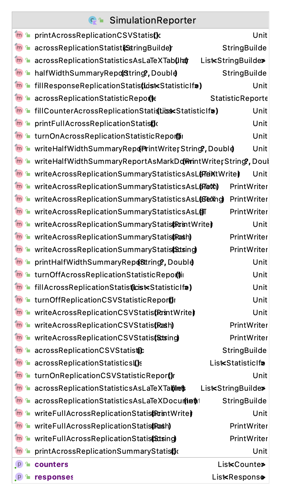
As shown in Figure 5.3, the SimualationReporter class has functionality to write simulation results in a number of formats. If you are a LaTeX user, you may want to try the functionality to create LaTeX tables. Besides reporting functionality, there is some limited ability to create copies of the underlying statistical objects. But, to directly get raw data, you should use the ReplicationDataCollector class or the KSL database.
The ReplicationDataCollector class and the ExperimentDataCollector class (not discussed here) are observers that can be attached to the model that will hold replication data and across experiment data, respectively. The collection can be limited to specific responses or all responses. The classes will hold the data observed from the simulation in memory (via arrays). These arrays can be accessed to perform post processing within code as needed.
// demonstrate capture of replication data for specific response variables
val repData = ReplicationDataCollector(model)
repData.addResponse(palletWorkCenter.totalProcessingTime)
repData.addResponse(palletWorkCenter.probOfOverTime)This code creates a ReplicationDataCollector instance and configures the instance to collect the replication data for the total processing time and probability of over time responses. A simple output of the first 10 values of the data arrays is shown here.
Total Processing Time P{total time > 480 minutes}
0 482.417201 1.0
1 461.544205 0.0
2 521.417293 1.0
3 476.025297 0.0
4 534.281150 1.0
5 485.735690 1.0
6 477.468018 0.0
7 482.557886 1.0
8 499.628817 1.0
9 471.007443 0.0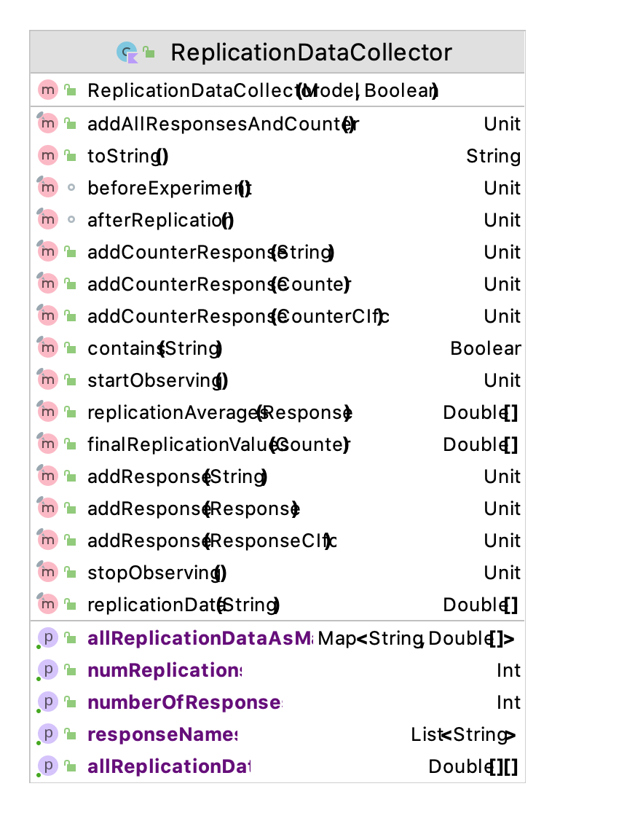
The most notable functionality shown in Figure 5.4 is the allReplicationDataAsMap property. The map is indexed by the name of the response as the key and the replication data as a DoubleArray. Thus, any response data that you need can be readily access within memory. The ExperimentDataCollector class (not discussed here) has similar functionality but will capture the data across different experiments. Experiment functionality will be discussed in a later chapter.
Now, let’s discuss the most useful KSL functionality for capturing simulation data, the KSLDatabase class. The following code creates an observer of the model in the form of a KSLDatabaseObserver. This class can be attached to a model and then will collect and insert all response and counter related statistical quantities into a well-structured database. The default database is an SQLite database but other database engines will also work. There is built in functionality for creating Derby and PostgreSQL based databases.
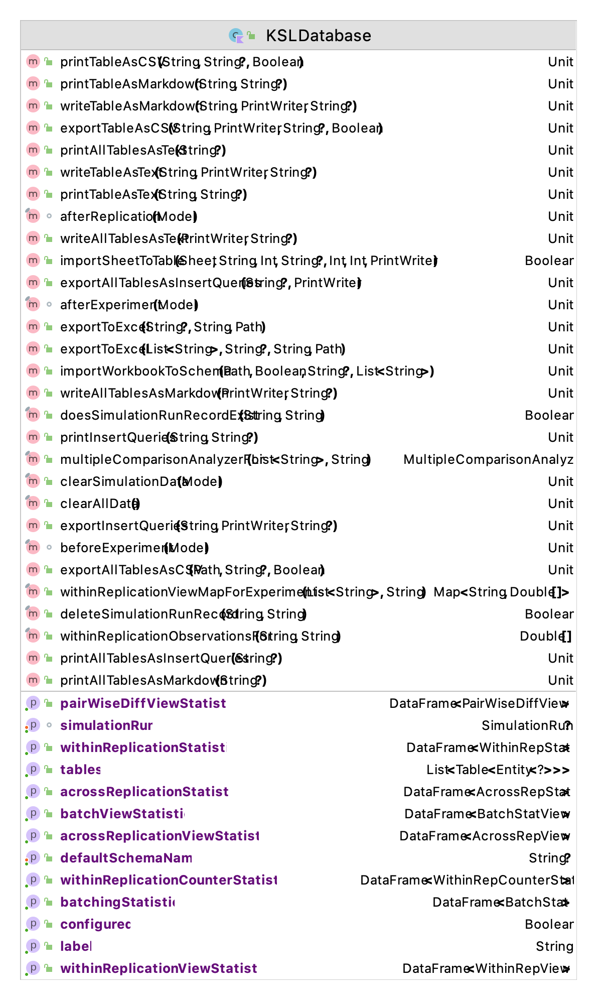
Figure 5.5 presents the functionality of the KSLDatabase class. This class is built on top of functionality within the KSL ksl.utilities.io.dbutil package for creating databases via the DatabaseIfc interface and the Database class. Here our focus is on how the data from a KSL simulation is captured and stored. The capturing occurs because the user attaches an instance of a KSLDatabaseObserver to a model as shown in this code snippet.
// demonstrate capturing data to database with an observer
val kslDatabaseObserver = KSLDatabaseObserver(model)This code creates an observer that accesses the simulation data after each replication and stores it within a database. The database will be stored within the dbDir folder of the simulation model’s output directory. Note that if you execute any simulation that has the same name as a previously executed simulation then the previous database will be deleted and recreated. This might cause you to lose previous simulation results. This behavior is the default because generally, when you re-run your simulation you want the results of that run to be written into the database. However, it is possible to not overwrite the database and store additional experiments within the same database. To do this, get an instance of an existing KSL database before creating the KSLDatabaseObserver. In addition, by changing the name of the experiment associated with the model, then the results from different experiments can be stored in the same database. This approach is useful when comparing results across simulation configurations.
The database will have the table structure shown in Figure 5.6.
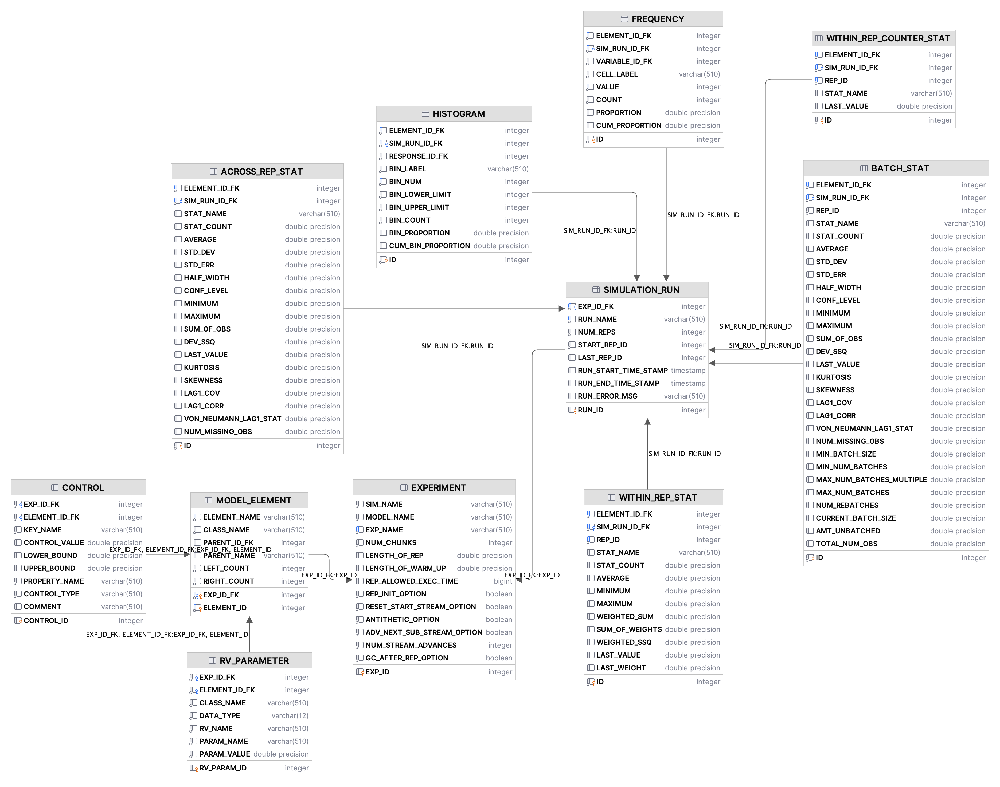
The KSL database consists of twelve tables that capture information and data concerning the execution of a simulation and resulting statistical quantities. Figure 5.6 presents the database diagram for the KSL_DB database schema.
SIMULATION_RUN– contains information about the simulation runs that are contained within the database. Such information as the name of the simulation, model, and experiment are captured. In addition, time stamps of the start and end of the experiment, the number of replications, the replication length, the length of the warm up period and options concerning stream control.MODEL_ELEMENTcontains information about the instances ofModelElementthat were used within the execution of the simulation run. A model element has an identifier that is considered unique to the simulation run. That is, the simulation run ID and the model element ID are the primary key of this table. The name of the model element, its class type, the name and ID of its parent element are also held for each entity inMODEL_ELEMENT.The parent/child relationship permits an understanding of the model element hierarchy that was present when the simulation executed.WITHIN_REP_STATcontains information about within replication statistical quantities associated withTWResponseandResponseinstances from each replication of a set of replications of the simulation. The name, count, average, minimum, maximum, weighted sum, sum of weights, weighted sum of squares, last observed value, and last observed weight are all captured.WITHIN_REP_COUNTER_STATcontains information about with replication observations associated with Counters used within the model. The name of the counter and the its value at the end of the replication are captured for each replication of a set of replications of the simulation.ACROSS_REP_STATcontains information about the across replication statistics associated withTWResponse,Response,andCounterinstances within the model. Statistical summary information across the replications is automatically stored.BATCH_STATcontains information about the batch statistics associated withTWResponse,Response,andCounterinstances within the model. Statistical summary information across the batches is automatically stored.HISTOGRAMcontains the results fromHistogramResponseinstances when they are used within a model.FREQUENCYcontains the results fromIntegerFrequencyResponseinstances when they are used within a model.TIME_SERIES_RESPONSErepresents within replication collection of response variables based on periods of time. The average value of the response during the period is recorded for each period for each replication of each simulation run.EXPERIMENTholds information across experimental runs. This is illustrated in Chapter 10.CONTROLholds the controls associated with a model as discussed in Section 10.1.1.RV_PARAMETERholds the random variables and their parameters as discussed in Section 10.1.2.
In addition to the base tables, the KSL database contains views of its underlying tables to facilitate simpler data extraction. Figure 5.7 presents the pre-defined views for the KSL database. The views, in essence, reduce the amount of information to the most likely used sets of data for the across replication, batch, and within replication captured statistical quantities. In addition, the PW_DIFF_WITHIN_REP_VIEW holds all pairwise differences for every response variable, time weighted variable, or counter from across all experiments within the database. This view reports (\(A - B\)) for every within replication ending average, where \(A\) is a simulation run that has higher simulation ID than \(B\) and they represent an individual performance measure. From this view, pairwise statistics can be computed across all replications. Since simulation IDs are assigned sequentially within the database, the lower the ID the earlier the simulation was executed.
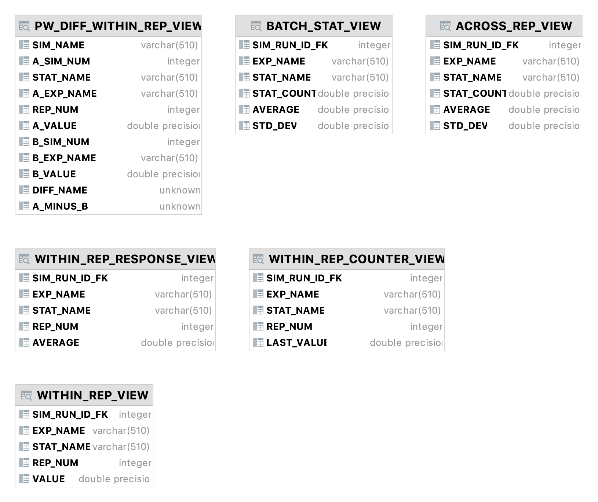
The information within the SIMULATION_RUN, MODEL_ELEMENT, WITHIN_REP_STAT, and WITHIN_REP_COUNTER_STAT tables are written to the database at the end of each replication. The ACROSS_REP_STAT and BATCH_STAT tables are filled after the entire experiment is completed. Even though the ACROSS_REP_STAT table could be constructed directly from the data captured within the tables holding with replication data, this is not done. Instead, the across replication statistics are directly written from the simulation after all replications of an experiment are completed.
As an illustration consider running a simulation multiple times within the same program execution but with different parameters. The following code illustrates how this might be achieved. Please note the following code at the bottom of the main execution routine.
model.experimentName = "Three Workers"
palletWorkCenter.numWorkers = 3
model.simulate()
out = model.outputDirectory.createPrintWriter("AcrossExperimentResults.md")
kslDatabaseObserver.db.writeTableAsMarkdown("ACROSS_REP_VIEW", out)In this code, the experiment name has been updated to “Three Workers” and the number of workers property changed. The model was simulated again. The underlying KSL database was accessed to write out the across replication view statistics. As shown in the following table, the database retained the data from the first execution and added the data from the second execution. This only occurred because the name of the experiment was changed between calls to the simulate() method. In the results, we see that adding a worker causes the chance of overtime to become zero.
Table: ACROSS_REP_VIEW
| SIM_ID | EXP_NAME | STAT_NAME | COUNT | AVERAGE | STD_DEV |
|---|---|---|---|---|---|
| 1 | Two Workers | Num Pallets at WC | 10.0 | 9.3145 | 3.0882 |
| 2 | Three Workers | Num Pallets at WC | 10.0 | 3.2083 | 0.7035 |
| 1 | Two Workers | Num Processed | 10.0 | 80.4 | 3.5023 |
| 2 | Three Workers | Num Processed | 10.0 | 79.1 | 4.1217 |
| 1 | Two Workers | NumBusyWorkers | 10.0 | 1.9174 | 0.0645 |
| 2 | Three Workers | NumBusyWorkers | 10.0 | 2.2399 | 0.1881 |
| 1 | Two Workers | PalletQ:NumInQ | 10.0 | 7.3971 | 3.0502 |
| 2 | Three Workers | PalletQ:NumInQ | 10.0 | 0.9683 | 0.5725 |
| 1 | Two Workers | PalletQ:TimeInQ | 10.0 | 44.6596 | 17.8325 |
| 2 | Three Workers | PalletQ:TimeInQ | 10.0 | 4.9261 | 2.6231 |
| 1 | Two Workers | P{total time > 480 minutes} | 10.0 | 0.6 | 0.5163 |
| 2 | Three Workers | P{total time > 480 minutes} | 10.0 | 0.0 | 0.0 |
| 1 | Two Workers | System Time | 10.0 | 56.32044792861602 | 17.8133 |
| 2 | Three Workers | System Time | 10.0 | 16.5628 | 2.6346 |
| 1 | Two Workers | Total Processing Time | 10.0 | 489.2083 | 22.8234 |
| 2 | Three Workers | Total Processing Time | 10.0 | 412.6305 | 28.1443 |
A KSLDatabase instance is constructed to hold the data from any KSL simulation. As such, a simulation execution can have many observers and thus could have any number of KSLDatabase instances that collect data from the execution. The most common case for multiple databases would be the use of an embedded database as well as a database that is stored on a remote database server.
Once you have a database that contains the schema to hold KSL based data, you can continue to write results to that database as much as you want. If your database is on a server, then you can easily collect data from different simulation executions that occur on different computers by referencing the database on the server. Therefore, if you are running multiple simulation runs in parallel on different computers or in the “cloud”, you should be able to capture the data from the simulation runs into one database.
5.4.2 Additional Remarks
The functionality of the KSL database depends upon how Response, TWResponse, and Counter instances are named within a KSL model. A KSL model is organized into a tree of ModelElement instances with the instance of the Model at the top of the tree. The Model instance for the simulation model contains instances of ModelElement, which are referred to as children of the parent model element. Each model element instance can have zero or more children, and those children can have children, etc. Each ModelElement instance must have a unique integer ID and a unique name. The unique integer ID is automatically provided when a ModelElement instance is created. The user can supply a name for a ModelElement instance when creating the instance. The name must be unique within the simulation model.
A recommended practice to ensure that model element names are unique is to use the name of the parent model element as part of the name. If the parent name is unique, then all children names will be unique relative to any other model elements. For example, in the following code name references the name of the current model element (an instance of Queue), which is serving as the parent for the children model element (responses) declared within the constructor body. Unfortunately, this approach may lead to very long names if the model element hierarchy is deep.
protected val myNumInQ: TWResponse = TWResponse(this, name = "${name}:NumInQ")
override val numInQ : TWResponseCIfc
get() = myNumInQ
protected val myTimeInQ: Response = Response(this, name = "${name}:TimeInQ")
override val timeInQ : ResponseCIfc
get() = myTimeInQThe name supplied to the TWResponse and Response constructors will cause the underlying statistic to have the indicated names. The response’s name cannot be changed once it is set. The statistic name is important for referencing statistical data within the KSL database.
One complicating factor involves using the KSL database to analyze the results from multiple simulation models. In order to more readily compare the results of the same performance measure between two different simulation models, the user should try to ensure that the names of the performance measures are the same. If the above recommended naming practice is used, the names of the statistics may depend on the order in which the model element instances are created and added to the model element hierarchy. If the model structure never changes between different simulation models then this will not present an issue; however, if the structure of the model changes between two different simulation models (which can be the case), the statistic names may be affected. If this issue causes problems, you can always name the desired output responses or counters exactly what you want it to be and use the same name in other simulation models, as long as you ensure unique names.
Since the model element ID is assigned automatically based on the number of model elements created within the model, the model element numbers between two instances of the same simulation model will most likely be different. Thus, there is no guarantee that the IDs will be the same and using the model element ID as part of queries on the KSL database will have to take this into account. You can assume that the name of the underlying statistic is the same as its associated model element and since it is user definable, it is better suited for queries based on the KSL database.
5.4.3 Querying the KSL Database
The KSL database is a database and thus it can be queried from within Kotlin or from other programs. If you have an instance of the KSLDatabase, you can extract information about the simulation run using the methods of the KSLDatabase class. Since the underlying data is stored in a relational database, SQL queries can be used on the database. The discussion of writing and executing SQL queries is beyond the scope of this text. To facilitate output when using the KSL, the KSL has a few methods to be aware of, including:
exportAllTablesAsCSV()– writes all the tables to separate CSV filesexportDbToExcelWorkbook()– writes all the tables and views to a single Excel workbookmultipleComparisonAnalyzerFor(set of experiment name, response name)– returns an instance of theMultipleComparisonAnalyzerclass in order to perform a multiple comparison analysis of a set of experiments on a specific response name.- a number of properties that return Kotlin data frames of the underlying database tables.
The data frame functionality was illustrated in the following code from the main execution method:
// use the database to create a Kotlin DataFrame
val dataFrame = kslDatabaseObserver.db.acrossReplicationViewStatistics
println(dataFrame)
Note
The Kotlin data frames library has excellent capabilities for processing data within a tablular format. The KSL has additional functionality for processing files via its utilities as described in Section E.4 of Appendix E. Also, you might want to explore the extensions for data frames described in Section E.5 of Appendix E.
Once you have the data frame you can employ whatever data wrangling and extraction methods that you need. Finally, because the KSL database is a database, it can be accessed via R or other software programs such as IntelliJ’s DataGrip or DBeaver and additional analysis performed on the KSL simulation data.
Based on the discussion in this section, the KSL has very useful functionality for working with the data generated from your simulation models.
5.5 Sequential Sampling for Finite Horizon Simulations
The methods discussed in Section 3.3.2 of Chapter 3 for determining the sample size are based on pre-determining a fixed sample size and then making the replications. If the half-width equation is considered as an iterative function of \(n\):
\[h(n) = t_{\alpha/2, n - 1} \dfrac{s(n)}{\sqrt{n}} \leq E\]
Then, it becomes apparent that additional replications of the simulation can be executed until the desired half-with bound is met. This is called sequential sampling, and in this case the sample size of the experiment is not known in advance. The brute force method for implementing this approach would be to run and rerun the simulation each time increasing the number of replications until the criterion is met.
To implement this within the KSL, we need a way to stop or end a simulation when a criteria or condition is met. Because of the hierarchical nature of the model elements within a model and because there are common actions that occur when running a model the Observer pattern can be used here.
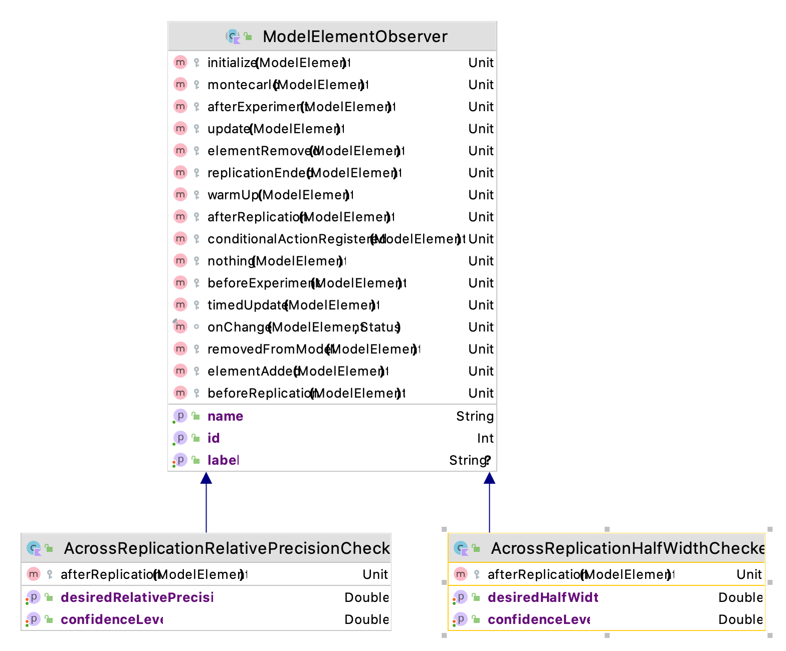
Figure 5.8 presents part of the ksl.observers package which defines a base class called ModelElementObserver that can be attached to instances of ModelElement and then will be notified if various actions take place. There are a number of actions associated with a ModelElement that occur during a simulation that can be listened for by a ModelElementObserver:
beforeExperiment()- This occurs prior to the first replication and before any events are executed.beforeReplication()- This occurs prior to each replication and before any events are executed. The event calendar is cleared after this action.initialize()- This occurs at the start of every replication (after beforeReplication() and after the event calendar is cleared) but before any events are executed. As we have seen, it is safe to schedule events in this method.warmUp()- This occurs during a replication if a warm up period has been specified for the model. The statistical accumulators are cleared during this action if applicable.replicationEnded()- This occurs at the end of every replication prior to the clearing of any statistical accumulators.afterReplication()- This occurs at the end of every replication after the statistical accumulators have been cleared for the replication.afterExperiment()- This occurs after all replications have been executed and prior to the end of the simulation.
ModelElementObservers are notified right after the ModelElement experiences the above mentioned actions. Thus, users of the ModelElementObserver need to understand that the state of the model element is available after the simulation actions of the model element have occurred.
The AcrossReplicationHalfWidthChecker class listens to the afterReplication() method of a Response instance and checks the current value of the half-width. This is illustrated in the following code listing.
override fun afterReplication(modelElement: ModelElement) {
if (modelElement.model.currentReplicationNumber <= 2){
return
}
val statistic = myResponse.myAcrossReplicationStatistic
val hw = statistic.halfWidth(confidenceLevel)
if (hw <= desiredHalfWidth){
modelElement.model.endSimulation("Half-width = ($desiredHalfWidth) condition met for response ${myResponse.name}")
}
}Notice that a reference to the observed Response is used to get access to the across replication statistics. If there are more than 2 replications, then the half-width is checked against a user supplied desired half-width. If the half-width criterion is met, then the simulation is told to end using the Model class’s endSimulation() method. The endSimulation() method causes the simulation to not execute any future replications and to halt further execution.
All that is needed is to get a reference to the response variable that needs to be checked so that the observer can be attached. This can be done easily if a reference to the response is exposed through the class’s interface. In this case the property, totalProcessingTime, an instance of ResponseCIfc, is used. Alternatively if the string name representation of the response is available, it can be used to extract the response from the model via the model’s functionality for getting model elements.
fun response(name: String): Response?
fun timeWeightedResponse(name: String): TWResponse?
fun counter(name: String): Counter? Example 5.2 (Sequential Sampling) The following code listing illustrates how to set up half-width checking for the pallet processing model.
fun main() {
val model = Model("Pallet Processing Ex 2")
model.numberOfReplications = 10000
model.experimentName = "Two Workers"
// add the model element to the main model
val palletWorkCenter = PalletWorkCenter(model)
val hwc = AcrossReplicationHalfWidthChecker(palletWorkCenter.totalProcessingTime)
hwc.desiredHalfWidth = 5.0
// simulate the model
model.simulate()
// demonstrate that reports can have specified confidence level
val sr = model.simulationReporter
sr.printHalfWidthSummaryReport()
}Notice that the number of replications is set to an arbitrarily high value (10000) and the desired half-width is specified as 5.0. In the original example, the half-width for the total processing time was 16.3269 based on 10 replications. As we can see from the following output, the half-width criteria has been met with 149 replications.
Half-Width Statistical Summary Report - Confidence Level (95.000)%
Name Count Average Half-Width
-----------------------------------------------------------------------------------------
NumBusyWorkers 149 1.9197 0.0101
PalletQ:NumInQ 149 7.3231 0.4997
PalletQ:TimeInQ 149 44.2002 2.9565
Num Pallets at WC 149 9.2428 0.5047
System Time 149 55.8544 2.9579
Total Processing Time 149 495.6675 4.9841
P{total time > 480 minutes} 149 0.7114 0.0736
Num Processed 149 81.5503 0.6339
----------------------------------------------------------------------------------------- 5.6 Analysis of Infinite Horizon Simulations
This section discusses how to plan and analyze infinite horizon simulations. When analyzing infinite horizon simulations, the primary difficulty is the nature of within replication data. In the finite horizon case, the statistical analysis is based on three basic requirements:
Observations are independent
Observations are sampled from identical distributions
Observations are drawn from a normal distribution (or enough observations are present to invoke the central limit theorem)
These requirements were met by performing independent replications of the simulation to generate a random sample. In a direct sense, the data within a replication do not satisfy any of these requirements; however, certain procedures can be imposed on the manner in which the observations are gathered to ensure that these statistical assumptions may be acceptable. The following will first explain why within replication data typically violates these assumptions and then will provide some methods for mitigating the violations within the context of infinite horizon simulations.
To illustrate the challenges related to infinite horizon simulations, a simple spreadsheet simulation was developed for a M/M/1 queue.
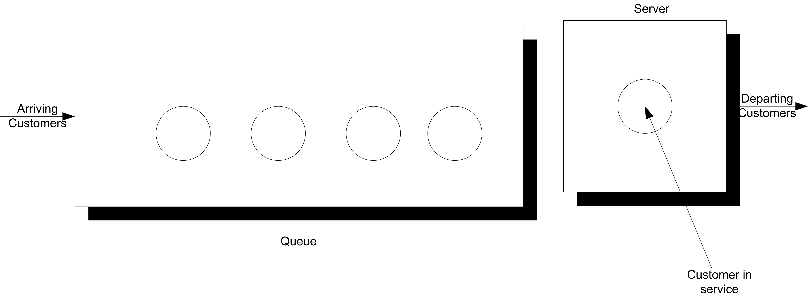
Consider a single server queuing system as illustrated Figure 5.9.
For a single server queueing system, there is an equation that allows the computation of the waiting times of each of the customers based on knowledge of the arrival and service times. Let \(X_1, X_2, \ldots\) represent the successive service times and \(Y_1, Y_2, \ldots\) represent the successive inter-arrival times for each of the customers that visit the queue. Let \(E[Y_i] = 1/\lambda\) be the mean of the inter-arrival times so that \(\lambda\) is the mean arrival rate. Let \(E[Y_i] = 1/\mu\) be the mean of the service times so that \(\mu\) is the mean service rate. Let \(W_i\) be the waiting time in the queue for the \(i^{th}\) customer. That is, the time between when the customer arrives until they enter service.
Lindley’s equation, see (Gross and Harris 1998), relates the waiting time to the arrivals and services as follows:
\[W_{i+1} = max(0, W_i + X_i - Y_i)\]
The relationship says that the time that the \((i + 1)^{st}\) customer must wait is the time the \(i^{th}\) waited, plus the \(i^{th}\) customer’s service time, \(X_i\) (because that customer is in front of the \(i^{th}\) customer), less the time between arrivals of the \(i^{th}\) and \((i + 1)^{st}\) customers, \(Y_i\). If \(W_i + X_i - Y_i\) is less than zero, then the (\((i + 1)^{st}\) customer arrived after the \(i^{th}\) finished service, and thus the waiting time for the \((i + 1)^{st}\) customer is zero, because his service starts immediately.
Suppose that \(X_i \sim exp(E[X_i] = 0.7)\) and \(Y_i \sim exp(E[Y_i] = 1.0)\). This is a M/M/1 queue with \(\lambda\) = 1 and \(\mu\) = 10/7. Thus, based on traditional queuing theory results:
\[\rho = 0.7\]
\[L_q = \dfrac{0.7 \times 0.7}{1 - 0.7} = 1.6\bar{33}\]
\[W_q = \dfrac{L_q}{\lambda} = 1.6\bar{33} \; \text{minutes}\]
Example 5.3 (Lindley Equation) Lindley’s equation can be readily implemented in using KSL constructs as illustrated in the following code listing.
class LindleyEquation(
var tba: RandomIfc = ExponentialRV(1.0),
var st: RandomIfc = ExponentialRV(0.7),
var numReps: Int = 30,
var numObs: Int = 100000,
var warmUp: Int = 10000
) {
init {
require(numReps > 0) { "The number of replications must be > 0" }
require(numObs > 0) { "The number of replications must be > 0" }
require(warmUp >= 0) { "The number of replications must be > 0" }
}
val avgw = Statistic("Across rep avg waiting time")
val avgpw = Statistic("Across rep prob of wait")
val wbar = Statistic("Within rep avg waiting time")
val pw = Statistic("Within rep prob of wait")
fun simulate(r: Int = numReps, n: Int = numObs, d: Int = warmUp) {
require(r > 0) { "The number of replications must be > 0" }
require(n > 0) { "The number of replications must be > 0" }
require(d >= 0) { "The number of replications must be > 0" }
for (i in 1..r) {
var w = 0.0 // initial waiting time
for (j in 1..n) {
w = Math.max(0.0, w + st.value - tba.value)
wbar.collect(w) // collect waiting time
pw.collect(w > 0.0) // collect P(W>0)
if (j == d) { // clear stats at warmup
wbar.reset()
pw.reset()
}
}
//collect across replication statistics
avgw.collect(wbar.average)
avgpw.collect(pw.average)
// clear within replication statistics for next rep
wbar.reset()
pw.reset()
}
}
fun print() {
println("Replication/Deletion Lindley Equation Example")
println(avgw)
println(avgpw)
println()
val sr = StatisticReporter(mutableListOf(avgw, avgpw))
print(sr.halfWidthSummaryReport())
}
}This implementation can be readily extended to capture the data to files for display in spreadsheets or other plotting software. As part of the plotting process it is useful to display the cumulative sum and cumulative average of the data values.
\[\sum_{i=1}^n W_i \; \text{for} \; n = 1,2,\ldots\]
\[\dfrac{1}{n} \sum_{i=1}^n W_i \; \text{for} \; n = 1,2,\ldots\]
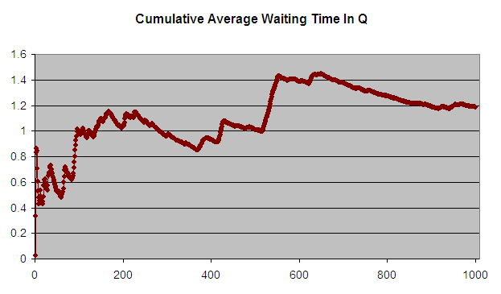
Figure 5.10 presents the cumulative average plot of the first 1000 customers. As seen in the plot, the cumulative average starts out low and then eventually trends towards 1.2 minutes.
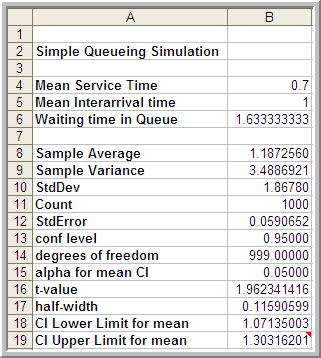
The analytical results indicate that the true long-run expected waiting time in the queue is 1.633 minutes. The average over the 1000 customers in the simulation is 1.187 minutes. The results in Figure 5.11 indicated that the sample average is significantly lower than the true expected average. We will explore why this occurs shortly.
The first issue to consider with this data is independence. To do this you should analyze the 1000 observations in terms of its autocorrelation.
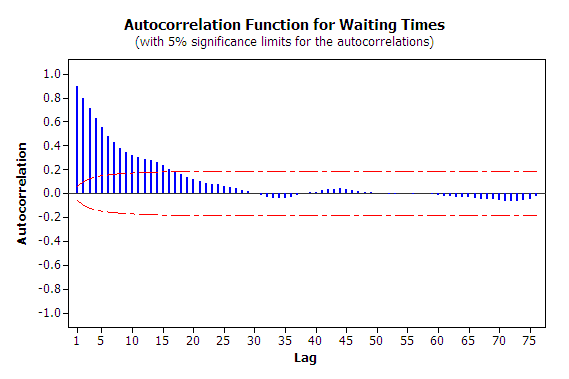
From Figure 5.12, it is readily apparent that the data has strong positive correlation. The lag-1 correlation for this data is estimated to be about 0.9. Figure 5.12 clearly indicates the strong first order linear dependence between \(W_i\) and \(W_{i-1}\). This positive dependence implies that if the previous customer waited a long time the next customer is likely to wait a long time. If the previous customer had a short wait, then the next customer is likely to have a short wait. This makes sense with respect to how a queue operates.
Strong positive correlation has serious implications when developing confidence intervals on the mean customer waiting time because the usual estimator for the sample variance:
\[S^2(n) = \dfrac{1}{n - 1} \sum_{i=1}^n (X_i - \bar{X})^2\]
is a biased estimator for the true population variance when there is correlation in the observations. This issue will be re-examined when ways to mitigate these problems are discussed.
The second issue that needs to be discussed is that of the non-stationary behavior of the data. Non-stationary data indicates some dependence on time. More generally, non-stationary implies that the \(W_1, W_2,W_3, \ldots, W_n\) are not obtained from identical distributions.
Why should the distribution of \(W_1\) not be the same as the distribution of \(W_{1000}\)? The first customer is likely to enter the queue with no previous customers present and thus it is very likely that the first customer will experience little or no wait (the way \(W_0\) was initialize in this example allows a chance of waiting for the first customer). However, the \(1000^{th}\) customer may face an entirely different situation. Between the \(1^{st}\) and the \(1000^{th}\) customer there might likely be a line formed. In fact from the M/M/1 formula, it is known that the steady state expected number in the queue is 1.633. Clearly, the conditions that the \(1^{st}\) customer faces are different than the \(1000^{th}\) customer. Thus, the distributions of their waiting times are likely to be different.
This situation can be better understood by considering a model for the underlying data. A time series, \(X_1,X_2,\ldots,\) is said to be covariance stationary if:
The mean exists and \(\theta = E[X_i]\), for i = 1,2,\(\ldots\), n
The variance exists and \(Var[X_i] = \sigma^2\) \(>\) 0, for i = 1,2,\(\ldots\), n
The lag-k autocorrelation, \(\rho_k = cor(X_i, X_{i+k})\), is not a function of i, i.e. the correlation between any two points in the series does not depend upon where the points are in the series, it depends only upon the distance between them in the series.
In the case of the customer waiting times, we can conclude from the discussion that it is very likely that \(\theta \neq E[X_i]\) and \(Var[X_i] \neq \sigma^2\) for each i = 1,2,\(\ldots\), n for the time series.
Do you think that is it likely that the distributions of \(W_{9999}\) and \(W_{10000}\) will be similar? The argument, that the \(9999^{th}\) customer is on average likely to experience similar conditions as the \(10000^{th}\) customer, sure seems reasonable.
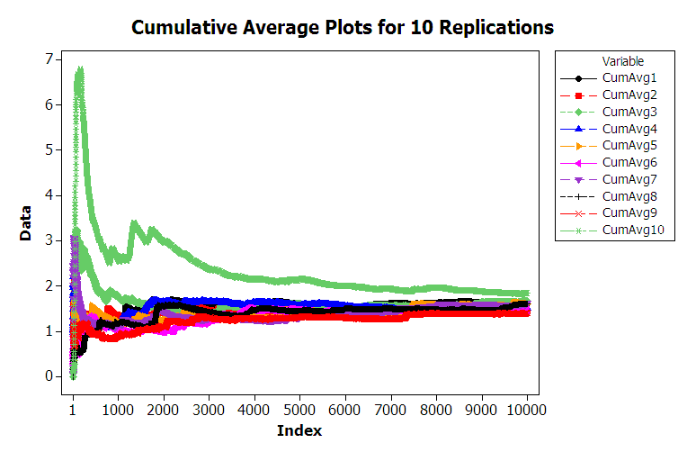
Figure 5.13 shows 10 different replications of the cumulative average for a 10000 customer simulation. From the figure, we can see that the cumulative average plots can vary significantly over the 10000 customers with the average tracking above the true expected value, below the true expected value, and possibly towards the true expected value. For the case of 10000 customers, you should notice that the cumulative average starts to approach the expected value of the steady state mean waiting time in the queue with increasing number of customers. This is the law of large numbers in action. It appears that it takes a period of time for the performance measure to warm up towards the true mean. Determining the warm up time will be the basic way to mitigate the problem of this non-stationary behavior.
From this discussion, we can conclude that the second basic statistical assumption of identically distributed data is not valid for within replication data. From this, we can also conclude that it is very likely that the data are not normally distributed. In fact, for the M/M/1 it can be shown that the steady state distribution for the waiting time in the queue is not a normal distribution. Thus, all three of the basic statistical assumptions are violated for the within replication data of this example. This problem needs to be addressed in order to properly analyze infinite horizon simulations.
There are two basic methods for performing infinite horizon simulations. The first is to perform multiple replications. This approach addresses independence and normality in a similar fashion as the finite horizon case, but special procedures will be needed to address the non-stationary aspects of the data. The second basic approach is to work with one very long replication. Both of these methods depend on first addressing the problem of the non-stationary aspects of the data. The next section looks at ways to mitigate the non-stationary aspect of within-replication data for infinite horizon simulations.
5.6.1 Assessing the Effect of Initial Conditions
Consider the output stochastic process \(X_i\) of the simulation. Let \(F_i(x|I)\) be the conditional cumulative distribution function of \(X_i\) where \(I\) represents the initial conditions used to start the simulation at time 0. If \(F_i(x|I) \rightarrow F(x)\) when \(i \rightarrow \infty\), for all initial conditions \(I\), then \(F(x)\) is called the steady state distribution of the output process. (Law 2007).
In infinite horizon simulations, estimating parameters of the steady state distribution, \(F(x)\), such as the steady state mean, \(\theta\), is often the key objective. The fundamental difficulty associated with estimating steady state performance is that unless the system is initialized using the steady state distribution (which is not known), there is no way to directly observe the steady state distribution.
It is true that if the steady state distribution exists and you run the simulation long enough the estimators will tend to converge to the desired quantities. Thus, within the infinite horizon simulation context, you must decide on how long to run the simulations and how to handle the effect of the initial conditions on the estimates of performance. The initial conditions of a simulation represent the state of the system when the simulation is started. For example, in simulating the pharmacy system, the simulation was started with no customers in service or in the line. This is referred to as empty and idle. The initial conditions of the simulation affect the rate of convergence of estimators of steady state performance.
Because the distributions \(F_i(x|I)\) at the start of the replication tend to depend more heavily upon the initial conditions, estimators of steady state performance such as the sample average, \(\bar{X}\), will tend to be biased. A point estimator, \(\hat{\theta}\), is an unbiased estimator of the parameter of interest, \(\theta\), if \(E[\hat{\theta}] = \theta\). That is, if the expected value of the sampling distribution is equal to the parameter of interest then the estimator is said to be unbiased. If the estimator is biased then the difference, \(E[\hat{\theta}] - \theta\), is called the bias of, \(\hat{\theta}\), the estimator.
Note that any individual difference between the true parameter, \(\theta\), and a particular observation, \(X_i\), is called error, \(\epsilon_i = X_i -\theta\). If the expected value of the errors is not zero, then there is bias. A particular observation is not biased. Bias is a property of the estimator. Bias is analogous to being consistently off target when shooting at a bulls-eye. It is as if the sights on your gun are crooked. In order to estimate the bias of an estimator, you must have multiple observations of the estimator. Suppose that you are estimating the mean waiting time in the queue as per the previous example and that the estimator is based on the first 20 customers. That is, the estimator is:
\[\bar{W}_r = \dfrac{1}{20}\sum_{i=1}^{20} W_{ir}\]
and there are \(r = 1, 2, \ldots 10\) replications. The following table shows the sample average waiting time for the first 20 customers for 10 different replications.
| r | \(\bar{W}_r\) | \(B_r = \bar{W}_r - W_q\) |
|---|---|---|
| 1 | 0.194114 | -1.43922 |
| 2 | 0.514809 | -1.11852 |
| 3 | 1.127332 | -0.506 |
| 4 | 0.390004 | -1.24333 |
| 5 | 1.05056 | -0.58277 |
| 6 | 1.604883 | -0.02845 |
| 7 | 0.445822 | -1.18751 |
| 8 | 0.610001 | -1.02333 |
| 9 | 0.52462 | -1.10871 |
| 10 | 0.335311 | -1.29802 |
| \(\bar{\bar{W}}\) = 0.6797 | \(\bar{B}\) = -0.9536 |
In the table, \(B_r\) is an estimate of the bias for the \(r^{th}\) replication, where \(W_q = 1.6\bar{33}\). Upon averaging across the replications, it can be seen that \(\bar{B}= -0.9536\), which indicates that the estimator based only on the first 20 customers has significant negative bias, i.e. on average it is less than the target value.
This is the so called initialization bias problem in steady state simulation. Unless the initial conditions of the simulation can be generated according to \(F(x)\), which is not known, you must focus on methods that detect and/or mitigate the presence of initialization bias.
One strategy for initialization bias mitigation is to find an index, \(d\), for the output process, \({X_i}\), so that \({X_i; i = d + 1, \ldots}\) will have substantially similar distributional properties as the steady state distribution \(F(x)\). This is called the simulation warm up problem, where \(d\) is called the warm up point, and \({i = 1,\ldots,d}\) is called the warm up period for the simulation. Then, the estimators of steady state performance are based only on \({X_i; i = d + 1, \ldots}\), which represent the data after deleting the warm up period.
For example, when estimating the steady state mean waiting time for each replication \(r\) the estimator would be:
\[\bar{W_r} = \dfrac{1}{n-d}\sum_{i=d+1}^{n} W_{ir}\]
For time-based performance measures, such as the average number in queue, a time \(T_w\) can be determined past which the data collection process can begin. Estimators of time-persistent performance such as the sample average are computed as:
\[\bar{Y}_r = \dfrac{1}{T_e - T_w}\int_{T_w}^{T_e} Y_r(t) dt\]
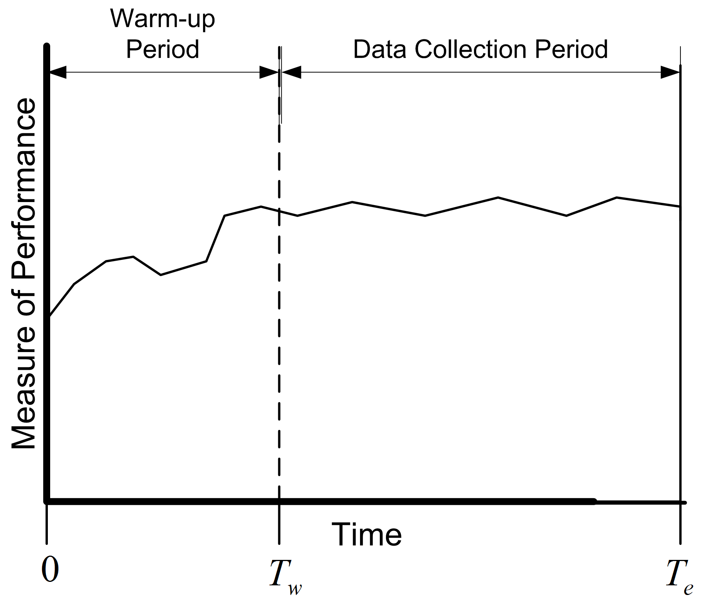
Figure 5.14 shows the concept of a warm up period for a simulation replication. When you perform a simulation, you can easily specify a time-based warm up period using the lengthOfReplicationWarmUp property of the Model class. In fact, even for observation based data, it will be more convenient to specify the warm up period in terms of time. A given value of \(T_w\) implies a particular value of \(d\) and vice versa. Specifying a warm up period, causes an event to be scheduled for time \(T_w\). At that time, all the accumulated statistical counters are cleared so that the net effect is that statistics are only collected over the period from \(T_w\) to \(T_e\). The problem then becomes that of finding an appropriate warm up period.
Before proceeding with how to assess the length of the warm up period, the concept of steady state needs to be further examined. This subtle concept is often misunderstood or misrepresented. Often you will hear the phrase: The system has reached steady state. The correct interpretation of this phrase is that the distribution of the desired performance measure has reached a point where it is sufficiently similar to the desired steady state distribution. Steady state is a concept involving the performance measures generated by the system as time goes to infinity. However, sometimes this phrase is interpreted incorrectly to mean that the system itself has reached steady state. Let me state emphatically that the system never reaches steady state. If the system itself reached steady state, then by implication it would never change with respect to time. It should be clear that the system continues to evolve with respect to time; otherwise, it would be a very boring system! Thus, it is incorrect to indicate that the system has reached steady state. Because of this, do not to use the phrase: The system has reached steady state.
Understanding this subtle issue raises an interesting implication concerning the notion of deleting data to remove the initialization bias. Suppose that the state of the system at the end of the warm up period, \(T_w\), is exactly the same as at \(T = 0\). For example, it is certainly possible that at time \(T_w\) for a particular replication that the system was empty and idle. Since the state of the system at \(T_w\) is the same as that of the initial conditions, there will be no effect of deleting the warm up period for this replication. In fact there will be a negative effect, in the sense that data will have been thrown away for no reason. Deletion methods are predicated on the likelihood that the state of the system seen at \(T_w\) is more representative of steady state conditions. At the end of the warm up period, the system can be in any of the possible states of the system. Some states will be more likely than others. If multiple replications are made, then at \(T_w\) each replication will experience a different set of conditions at \(T_w\). Let \(I_{T_w}^r\) be the initial conditions (state) at time \(T_w\) on replication \(r\). By setting a warm up period and performing multiple replications, you are in essence sampling from the distribution governing the state of the system at time \(T_w\). If \(T_w\) is long enough, then on average across the replications, you are more likely to start collecting data when the system is in states that are more representative over the long term (rather than just empty and idle).
Many methods and rules have been proposed to determine the warm up period. The interested reader is referred to (Wilson and Pritsker 1978), Lada et al. (2003), (Litton and Harmonosky 2002), White et al. (2000), Cash et al. (1992), and (Rossetti and Delaney 1995) for an overview of such methods. This discussion will concentrate on the visual method proposed in (Welch 1983).
The basic idea behind Welch’s graphical procedure is simple:
Make \(R\) replications. Typically, \(R \geq 5\) is recommended.
Let \(Y_{rj}\) be the \(j^{th}\) observation on replication \(r\) for \(j = 1,2,\cdots,m_r\) where \(m_r\) is the number of observations in the \(r^{th}\) replication, and \(r = 1,2,\cdots,n\),
Compute the averages across the replications for each \(j = 1, 2, \ldots, m\), where \(m = min(m_r)\) for \(r = 1,2,\cdots,n\).
\[\bar{Y}_{\cdot j} = \dfrac{1}{n}\sum_{r=1}^n Y_{rj}\]
Plot, \(\bar{Y}_{\cdot j}\) for each \(j = 1, 2, \ldots, m\)
Apply smoothing techniques to \(\bar{Y}_{\cdot j}\) for \(j = 1, 2, \ldots, m\)
Visually assess where the plot start to converge
Let’s apply the Welch’s procedure to the replications generated from the Lindley equation simulation. Using the 10 replications stored in a spreadsheet we can compute the average across each replication for each customer.
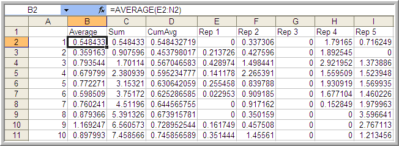
In Figure 5.15, cell B2 represents the average across the 10 replications for the \(1^{st}\) customer. Column D represents the cumulative average associated with column B.
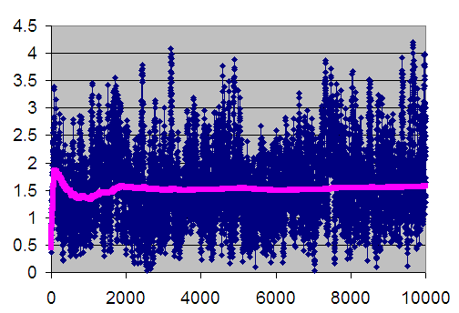
Figure 5.16 is the plot of the cumulative average (column D) superimposed on the averages across replications (column B). The cumulative average is one method of smoothing the data. From the plot, you can infer that after about customer 3000 the cumulative average has started to converge. Thus, from this analysis you might infer that \(d = 3000\).
When you perform an infinite horizon simulation by specifying a warm up period and making multiple replications, you are using the method of replication-deletion. If the method of replication-deletion with \(d = 3000\) is used for the current example, a slight reduction in the bias can be achieved as indicated in the following table.
| \(r\) | \(\bar{W}_r\) \((d = 0)\) | \(\bar{W}_r(d = 3000)\) | \(B_r(d = 0)\) | \(B_r(d = 3000)\) |
|---|---|---|---|---|
| 1 | 1.594843 | 1.592421 | -0.03849 | -0.04091 |
| 2 | 1.452237 | 1.447396 | -0.1811 | -0.18594 |
| 3 | 1.657355 | 1.768249 | 0.024022 | 0.134915 |
| 4 | 1.503747 | 1.443251 | -0.12959 | -0.19008 |
| 5 | 1.606765 | 1.731306 | -0.02657 | 0.097973 |
| 6 | 1.464981 | 1.559769 | -0.16835 | -0.07356 |
| 7 | 1.621275 | 1.75917 | -0.01206 | 0.125837 |
| 8 | 1.600563 | 1.67868 | -0.03277 | 0.045347 |
| 9 | 1.400995 | 1.450852 | -0.23234 | -0.18248 |
| 10 | 1.833414 | 1.604855 | 0.20008 | -0.02848 |
| \(\bar{\bar{W}}\) = 1.573617 | \(\bar{\bar{W}}\) = 1.603595 | \(\bar{B}\) = -0.05972 | \(\bar{B}\) = -0.02974 | |
| s = 0.1248 | s = 0.1286 | s = 0.1248 | s = 0.1286 | |
| 95% LL | 1.4843 | 1.5116 | -0.149023 | -0.121704 |
| 95% UL | 1.6629 | 1.6959 | -0.029590 | 0.062228 |
While not definitive for this simple example, the results suggest that deleting the warm up period helps to reduce initialization bias. This model’s warm up period will be further analyzed using additional tools available in the next section.
In performing the method of replication-deletion, there is a fundamental trade-off that occurs. Because data is deleted, the variability of the estimator will tend to increase while the bias will tend to decrease. This is a trade-off between a reduction in bias and an increase in variance. That is, accuracy is being traded off against precision when deleting the warm up period. In addition to this trade off, data from each replication is also being thrown away. This takes computational time that could be expended more effectively on collecting usable data. Another disadvantage of performing replication-deletion is that the techniques for assessing the warm up period (especially graphical) may require significant data storage. The Welch plotting procedure requires the saving of data points for post processing after the simulation run. In addition, significant time by the analyst may be required to perform the technique and the technique is subjective.
When a simulation has many performance measures, you may have to perform a warm up period analysis for every performance measure. This is particularly important, since in general, the performance measures of the same model may converge towards steady state conditions at different rates. In this case, the length of the warm up period must be sufficiently long enough to cover all the performance measures. Finally, replication-deletion may simply compound the bias problem if the warm up period is insufficient relative to the length of the simulation. If you have not specified a long enough warm up period, you are potentially compounding the problem for \(n\) replications.
Despite all these disadvantages, replication-deletion is very much used in practice because of the simplicity of the analysis after the warm up period has been determined. Once you are satisfied that you have a good warm up period, the analysis of the results is the same as that of finite horizon simulations. Replication-deletion also facilitates the use of experimental design techniques that rely on replicating design points.
The next section illustrates how to perform the method of replication-deletion on this simple M/M/1 model.
5.6.2 Performing the Method of Replication-Deletion
The first step in performing the method of replication-deletion is to determine the length of the warm up period. This example illustrates how to:
Save the values from observation and time-based data to files for post processing
Make Welch plots based on the saved data
Setup and run the multiple replications
Interpret the results
When performing a warm-up period analysis, the first decision to make is the length of each replication. In general, there is very little guidance that can be offered other than to try different run lengths and check for the sensitivity of your results. Within the context of queueing simulations, the work by (Whitt 1989) offers some ideas on specifying the run length, but these results are difficult to translate to general simulations.
Since the purpose here is to determine the length of the warm up period, then the run length should be bigger than what you suspect the warm up period to be. In this analysis, it is better to be conservative. You should make the run length as long as possible given your time and data storage constraints. Banks et al. (2005) offer the rule of thumb that the run length should be at least 10 times the amount of data deleted. That is, \(n \geq 10d\) or in terms of time, \(T_e \geq 10T_w\). Of course, this is a “catch 22” situation because you need to specify \(n\) or equivalently \(T_e\) in order to assess \(T_w\). Setting \(T_e\) very large is recommended when doing a preliminary assessment of \(T_w\). Then, you can use the rule of thumb of 10 times the amount of data deleted when doing a more serious assessment of \(T_w\) (e.g. using Welch plots etc.)
A preliminary assessment of the current model has already been performed based on the previously described spreadsheet simulation. That assessment suggested a deletion point of at least \(d = 3000\) customers. This can be used as a starting point in the current effort. Now, \(T_w\) needs to be determined based on \(d\). The value of \(d\) represents the customer number for the end of the warm up period. To get \(T_w\), you need to answer the question: How long (on average) will it take for the simulation to generate \(d\) observations. In this model, the mean number of arrivals is 1 customer per minute. Thus, the initial \(T_w\) is
\[3000 \; \text{customers} \times \frac{\text{minute}}{\text{1 customer}} \; = 3000 \; \text{minutes}\]
and therefore the initial \(T_e\) should be 30,000 minutes. That is, you should specify 30,000 minutes for the replication length.
5.6.2.1 Determining the Warm Up Period
To perform a more rigorous analysis of the warm up period, we need to run the simulation for multiple replications and capture the data necessary to produce Welch plots for the performance measures of interest. Within the KSL, this can be accomplished by using the classes within the ksl.observers.welch package. There are two classes of note:
WelchDataFileCollector-
This class captures data associated with a Response within the simulation model. Every observation from every replication is written to a binary data file. In addition, a text based data file is created that contains the meta data associated with the data collection process. The meta data file records the number of replications, the number of observations for each replication, and the time between observations for each replication.
WelchDataFileAnalyzer-
This class uses the files produced by the
WelchDataFileCollectorto produces the Welch data. That is, the average across each row of observations and the cumulative average over the observations. This class produces files from which the plots can be made.
A warm up period analysis is associated with a particular response. The goal is to determine the number of observations of the response to delete at the beginning of the simulation. We can collect the relevant data by attaching an observer to the response variable.
Example 5.4 (Welch Plot Analysis) This code illustrates how to capture Welch plot data and to show the Welch plot within a browser window.
fun main(){
val model = Model("Drive Through Pharmacy")
// add DriveThroughPharmacy to the main model
val dtp = DriveThroughPharmacyWithQ(model, 1)
dtp.arrivalRV.initialRandomSource = ExponentialRV(1.0, 1)
dtp.serviceRV.initialRandomSource = ExponentialRV(0.7, 2)
val rvWelch = WelchFileObserver(dtp.systemTime, 1.0)
val twWelch = WelchFileObserver(dtp.numInSystem, 10.0)
model.numberOfReplications = 5
model.lengthOfReplication = 50000.0
model.simulate()
model.print()
println(rvWelch)
println(twWelch)
val rvFileAnalyzer = rvWelch.createWelchDataFileAnalyzer()
val twFileAnalyzer = twWelch.createWelchDataFileAnalyzer()
rvFileAnalyzer.createCSVWelchPlotDataFile()
twFileAnalyzer.createCSVWelchPlotDataFile()
val wp = WelchPlot(analyzer = rvFileAnalyzer)
wp.defaultPlotDir = model.outputDirectory.plotDir
wp.showInBrowser()
wp.saveToFile("SystemTimeWelchPlot")
}In the code, we create two instances of WelchFileObserver one for the system time (systemTime) and one for the number in the system (numInSyste) both referenced from the exposed properties of the drive through pharmacy class. Since the number in the system is a time-persistent variable, it is discretized based on intervals of 10 time units. The concept of discretizing the time-persistent data is illustrated in Figure 5.18. The WelchFileObserver instances are used to create WelchDataFileAnalyzer instances, which are used to make the data for plotting. You can use any plotting program that you want to display the plot.
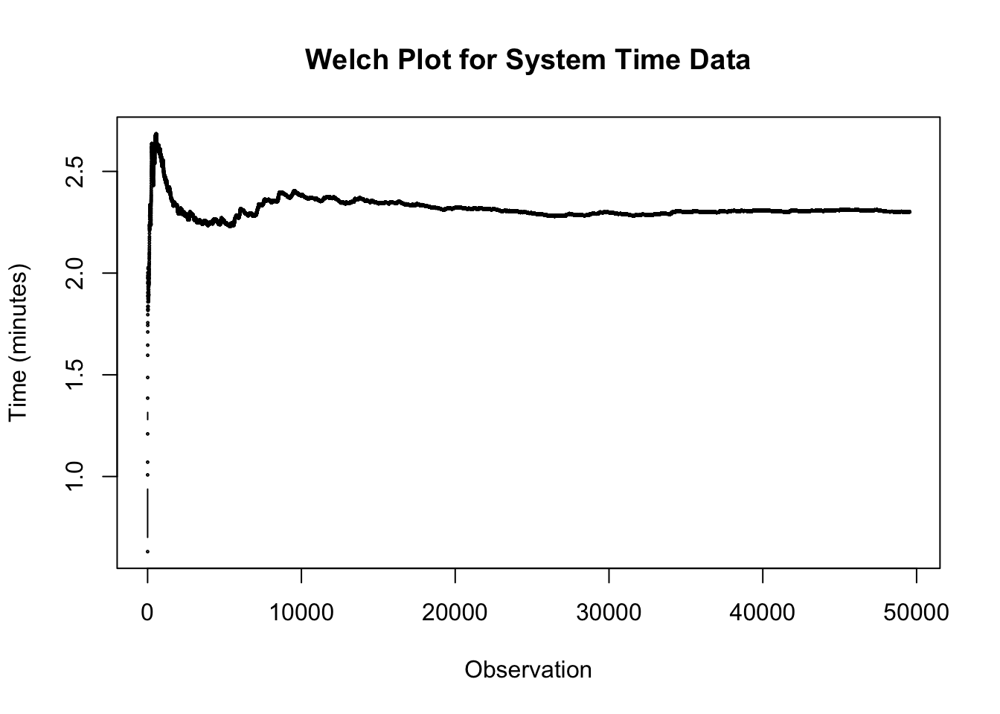
Figure 5.17 illustrates the plot of the data. From this plot, we can estimate the number of observations to delete as approximately 20000.
Time-persistent observations are saved within a file from within the model such that the time of the observation and the value of the state variable at the time of change are recorded. Thus, the observations are not equally spaced in time. In order to perform the Welch plot analysis, we need to cut the data into discrete equally spaced intervals of time.
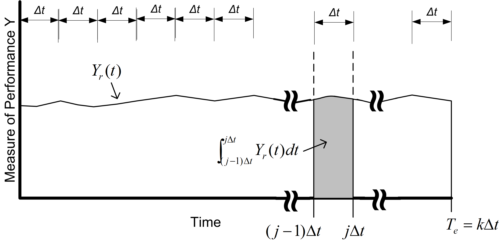
Figure 5.18 illustrates the concept of discretizing time-persistent data. Suppose that you divide \(T_e\) into \(k\) intervals of size \(\Delta t\), so that \(T_e = k \times \Delta t\). The time average over the \(j^{th}\) interval is given by:
\[\bar{Y}_{rj} = \dfrac{1}{\Delta t} \int_{j-1) \Delta t}^{j \Delta t} Y_r(t)dt\]
Thus, the overall time average can be computed from the time average associated with each interval:
\[\begin{aligned} \bar{Y}_{r} & = \dfrac{\int_0^{T_e} Y_r (t)dt}{T_e} =\dfrac{\int_0^{T_e} Y_r (t)dt}{k \Delta t} \\ & = \dfrac{\sum_{j=1}^{k}\int_{(j-1) \Delta t}^{j \Delta t} Y_r (t)dt}{k \Delta t} = \dfrac{\sum_{j=1}^{k} \bar{Y}_{rj}}{k}\end{aligned}\]
Each of the \(\bar{Y}_{rj}\) are computed over intervals of time that are equally spaced and can be treated as if they are observation (tally) based data.
The computation of the \(\bar{Y}_{rj}\) for time-persistent data can be achieved by using the WelchDataFileCollector class and specifying a discretization interval. Since the number in queue data is time-persistent, time based batches are selected, and the batch size is specified in terms of time. In this case, the data is being batched based on a time interval of 10 minutes. This produces a file which contains the \(\bar{Y}_{rj}\) as observations. This file can then be analyzed as previously illustrated.
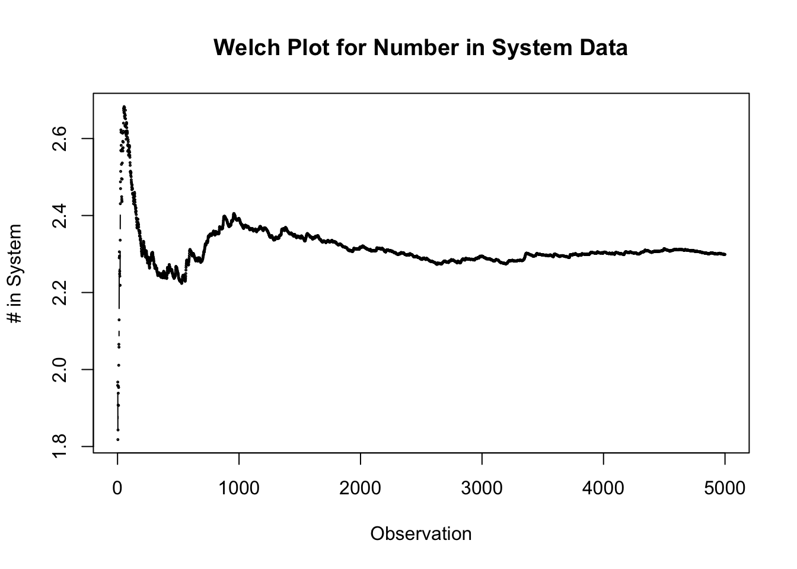
The resulting plot is show in Figure 5.19. This plot is sparser than the previous plot because each observation represents the average of 10 minutes. There are 5000 observations. From the plot, we can conclude that after observation 2000, we see a steady convergence. The 2000th observation represents 20000 time units (minutes) because every observation represents 10 time units.
Once you have performed the warm up analysis, you still need to use your simulation model to estimate system performance. Because the process of analyzing the warm up period involves saving the data you could use the already saved data to estimate your system performance after truncating the initial portion of the data from the data sets. If re-running the simulation is relatively inexpensive, then you can simply set the warm up period via the Model class and re-run the model. Following the rule of thumb that the length of the run should be at least 10 times the warm up period, the simulation was re-run with the settings (30 replications, 20000 minute warm up period, 200,000 minute replication length). The results shown in the following table indicate that there does not appear to be any significant bias with these replication settings.
| Name | Count | Average | Half-Width |
|---|---|---|---|
| NumBusy | 30.0 | .7001 | .0008 |
| # in System | 30.0 | 2.3402 | .0103 |
| System Time | 30.0 | 2.3389 | .01 |
| PharmacyQ:NumInQ | 30.0 | 1.6401 | .0098 |
| PharmacyQ:TimeInQ | 30.0 | 1.6392 | .0097 |
| SysTime > 4.0 minutes | 30.0 | .1806 | .0013 |
| Num Served | 30.0 | 180104.9667 | 145.7244 |
The true waiting time in the queue is \(1.6\bar{33}\) and it is clear that the 95% confidence interval contains this value.
The process described here for determining the warm up period for steady state simulation is tedious and time consuming. Research into automating this process is an active area of investigation. The work by (Robinson 2005) and Rossetti and Li (2005) holds some promise in this regard; however, there remains the need to integrate these methods into computer simulation software. Even though determining the warm up period is tedious, some consideration of the warm up period should be done for infinite horizon simulations.
Once the warm up period has been found, you can set the warm up period using the Model class. Then, you can use the method of replication-deletion to perform your simulation experiments. Thus, all the discussion previously presented on the analysis of finite horizon simulations can be applied.
When determining the number of replications, you can apply the fixed sample size procedure after performing a pilot run. If the analysis indicates that you need to make more runs to meet your confidence interval half-width you have two alternatives: 1) increase the number of replications or 2) keep the same number of replications but increase the length of each replication. If \(n_0\) was the initial number of replications and \(n\) is the number of replications recommended by the sample size determination procedure, then you can instead set \(T_e\) equal to \((n/n_0)T_e\) and run \(n_0\) replications. Thus, you will still have approximately the same amount of data collected over your replications, but the longer run length may reduce the effect of initialization bias.
As previously mentioned, the method of replication-deletion causes each replication to delete the initial portion of the run. As an alternative, you can make one long run and delete the initial portion only once. When analyzing an infinite horizon simulation based on one long replication, a method is needed to address the correlation present in the within replication data. The method of batch means is often used in this case and has been automated in within the KSL. The next section discusses the statistical basis for the batch means method and addresses some of the practical issues of using it within the KSL.
5.6.3 The Method of Batch Means
In the batch means method, only one simulation run is executed. After deleting the warm up period, the remainder of the run is divided into \(k\) batches, with each batch average representing a single observation.
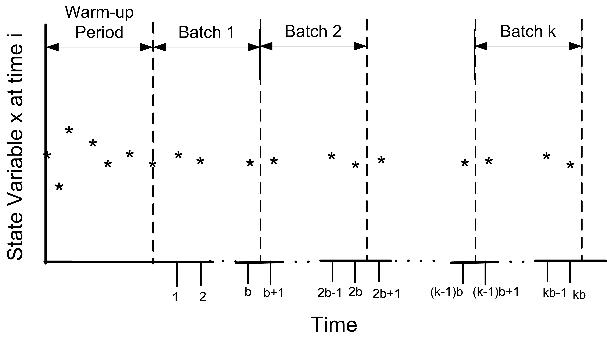
Figure 5.20 illustrates the concept of batching observations. The advantages of the batch means method are that it entails a long simulation run, thus dampening the effect of the initial conditions. The disadvantage is that the within replication data are correlated and unless properly formed the batches may also exhibit a strong degree of correlation.
The following presentation assumes that a warm up analysis has already been performed and that the data that has been collected occurs after the warm up period. For simplicity, the presentation assumes observation based data. The discussion also applies to time-based data that has been cut into discrete equally spaced intervals of time as previously described. Therefore, assume that a series of observations, \((X_1, X_2, X_3, \ldots, X_n)\), is available from within the one long replication after the warm up period. As shown earlier, the within replication data can be highly correlated. In that section, it was mentioned that standard confidence intervals based on
\[S^2(n) = \dfrac{1}{n - 1}\sum_{i=1}^n (X_i - \bar{X})^2\]
are not appropriate for this type of data. Suppose you were to ignore the correlation, what would be the harm? In essence, a confidence interval implies a certain level of confidence in the decisions based on the confidence interval. When you use \(S^2(n)\) as defined above, you will not achieve the desired level of confidence because \(S^2(n)\) is a biased estimator for the variance of \(\bar{X}\) when the data are correlated. Under the assumption that the data are covariance stationary, an assessment of the harm in ignoring the correlation can be made. For a series that is covariance stationary, one can show that
\[Var(\bar{X}) = \dfrac{\gamma_0}{n} \left[1 + 2 \sum_{k=1}^{n-1} \left(1 - \dfrac{k}{n} \right) \rho_k \right]\]
where \(\gamma_0 = Var(X_i)\), \(\gamma_k = Cov(X_i, X_{i + k})\), and \(\rho_k = \gamma_k/\gamma_0\) for \(k = 1, 2, \ldots, n - 1\).
When the data are correlated, \(S^2/n\) is a biased estimator of \(Var(\bar{X})\). To show this, you need to compute the expected value of \(S^2/n\) as follows:
\[E\left[S^2/n\right] = \dfrac{\gamma_0}{n} \left[1 - \dfrac{2R}{n - 1}\right]\]
where
\[R = \sum_{k=1}^{n-1} (1 - \dfrac{k}{n}) \rho_k\]
Bias is defined as the difference between the expected value of the estimator and the quantity being estimated. In this case, the bias can be computed with some algebra as:
\[\text{Bias} = E\left[S^2/n\right] - Var(\bar{Y}) = \dfrac{-2 \gamma_0 R}{n - 1}\]
Since \(\gamma_0 > 0\) and \(n > 1\) the sign of the bias depends on the quantity R and thus on the correlation. There are three cases to consider: zero correlation, negative correlation, and positive correlation. Since \(-1 \leq \rho_k \leq 1\), examining the limiting values for the correlation will determine the range of the bias.
For positive correlation, \(0 \leq \rho_k \leq 1\), the bias will be negative, (\(- \gamma_0 \leq Bias \leq 0\)). Thus, the bias is negative if the correlation is positive, and the bias is positive if the correlation is negative. In the case of positive correlation, \(S^2/n\) underestimates the \(Var(\bar{X})\). Thus, using \(S^2/n\) to form confidence intervals will make the confidence intervals too short. You will have unjustified confidence in the point estimate in this case. The true confidence will not be the desired \(1 - \alpha\). Decisions based on positively correlated data will have a higher than planned risk of making an error based on the confidence interval.
One can easily show that for negative correlation, \(-1 \leq \rho_k \leq 0\), the bias will be positive (\(0 \leq Bias \leq \gamma_0\)). In the case of negatively correlated data, \(S^2/n\) over estimates the \(Var(\bar{X})\). A confidence interval based on \(S^2/n\) will be too wide and the true quality of the estimate will be better than indicated. The true confidence coefficient will not be the desired \(1 - \alpha\); it will be greater than \(1 - \alpha.\)
Of the two cases, the positively correlated case is the more severe in terms of its effect on the decision making process; however, both are problems. Thus, the naive use of \(S^2/n\) for dependent data is highly unwarranted. If you want to build confidence intervals on \(\bar{X}\) you need to find an unbiased estimator of the \(Var(\bar{X})\).
The method of batch means provides a way to develop (at least approximately) an unbiased estimator for \(Var(\bar{X})\). Assuming that you have a series of data point, the method of batch means method divides the data into subsequences of contiguous batches:
\[\begin{gathered} \underbrace{X_1, X_2, \ldots, X_b}_{batch 1} \cdots \underbrace{X_{b+1}, X_{b+2}, \ldots, X_{2b}}_{batch 2} \cdots \\ \underbrace{X_{(j-1)b+1}, X_{(j-1)b+2}, \ldots, X_{jb}}_{batch j} \cdots \underbrace{X_{(k-1)b+1}, X_{(k-1)b+2}, \ldots, X_{kb}}_{batch k}\end{gathered}\]
and computes the sample average of the batches. Let \(k\) be the number of batches each consisting of \(b\) observations, so that \(k = \lfloor n/b \rfloor\). If \(b\) is not a divisor of \(n\) then the last \((n - kb)\) data points will not be used. Define \(\bar{X}_j(b)\) as the \(j^{th}\) batch mean for \(j = 1, 2, \ldots, k\), where,
\[\bar{X}_j(b) = \dfrac{1}{b} \sum_{i=1}^b X_{(j-1)b+i}\]
Each of the batch means are treated like observations in the batch means series. For example, if the batch means are re-labeled as \(Y_j = \bar{X}_j(b)\), the batching process simply produces another series of data, (\(Y_1, Y_2, Y_3, \ldots, Y_k\)) which may be more like a random sample. To form a \((1 - \alpha)\)% confidence interval, you simply treat this new series like a random sample and compute approximate confidence intervals using the sample average and sample variance of the batch means series:
\[\bar{Y}(k) = \dfrac{1}{k} \sum_{j=1}^k Y_j\]
\[S_b^2 (k) = \dfrac{1}{k - 1} \sum_{j=1}^k (Y_j - \bar{Y}^2)\]
\[\bar{Y}(k) \pm t_{\alpha/2, k-1} \dfrac{S_b (k)}{\sqrt{k}}\]
Since the original X’s are covariance stationary, it follows that the resulting batch means are also covariance stationary. One can show, see (Alexopoulos and Seila 1998), that the correlation in the batch means reduces as both the size of the batches, \(b\) and the number of data points, \(n\) increases. In addition, one can show that \(S_b^2 (k)/k\) approximates \(\text{Var}(\bar{X})\) with error that reduces as both \(b\) and \(n\) increase towards infinity.
The basic difficulty with the batch means method is determining the batch size or alternatively the number of batches. Larger batch sizes are good for independence but reduce the number of batches, resulting in higher variance for the estimator. (Schmeiser 1982) performed an analysis that suggests that there is little benefit if the number of batches is larger than 30 and recommended that the number of batches remain in the range from 10 to 30. However, when trying to assess whether the batches are independent, it is better to have a large number of batches (\(>\) 100) so that tests on the lag-k correlation have better statistical properties.
There are a variety of procedures that have been developed that will automatically batch the data as it is collected, see for example (Fishman and Yarberry 1997), (Steiger and Wilson 2002), and Banks et al. (2005). has its own batching algorithm. The batching algorithm is described in Kelton et al. (2004) page 311. See also (Fishman 2001) page 254 for an analysis of the effectiveness of the algorithm.
The discussion here is based on the description in Kelton et al. (2004). When the algorithm has recorded a sufficient amount of data, it begins by forming k = 20 batches. As more data is collected, additional batches are formed until k = 40 batches are collected. When 40 batches are formed, the algorithm collapses the number of batches back to 20, by averaging each pair of batches. This has the net effect of doubling the batch size. This process is repeated as more data is collected, thereby ensuring that the number of batches is between 20 and 39.
For time-persistent data, the approach requires that the data be discretized as previously discussed in the section on warm up period analysis. Then, the same batch method is applied to ensure between 20 and 39 batches. In addition, the process also computes the lag-1 correlation so that a test can be performed to check if the correlation is significant by testing the hypothesis that the batch means are uncorrelated using the following test statistic, see (Alexopoulos and Seila 1998):
\[C = \sqrt{\dfrac{k^2 - 1}{k - 2}}\biggl[ \hat{\rho}_1 + \dfrac{[Y_1 - \bar{Y}]^2 + [Y_k - \bar{Y}]^2}{2 \sum_{j=1}^k (Y_j - \bar{Y})^2}\biggr]\]
\[\hat{\rho}_1 = \dfrac{\sum_{j=1}^{k-1} (Y_j - \bar{Y})(Y_{j+1} - \bar{Y})}{\sum _{j=1}^k (Y_j - \bar{Y})^2}\]
The hypothesis is rejected if \(C > z_\alpha\) for a given confidence level \(\alpha\). If the batch means do not pass the test, then increasing the replication run length should permit more data to be collected and increase the size of the batches. This may permit the correlation test to pass.
5.6.4 Performing the Method of Batch Means
Performing the method of batch means in the KSL is relatively straight forward. The following assumes that a warm up period analysis has already been performed. Batches are formed during the simulation run and the confidence intervals are based on the batches. In this situation, the primary concern will be to determine the run length that will ensure a desired half-width on the confidence intervals. Both fixed sampling and sequential sampling methods can be applied.
The following code present the process to set up batching within the KSL for the Drive Through Pharmacy Model. The key class is the StatisticalBatchingElement class, which must be added to the Model (see line 9) prior to running the simulation. The StatisticalBatchingElement has one key parameter which represents the interval used to discretize the time weighted variables. If no interval is supplied, then the algorithm ensures that the initial number of batches collected before applying the previously described batching algorithm is 512.
Example 5.5 (Performing a Batch Means Analysis) This code illustrates how to perform a single run, batch means analysis, by adding a batching element to the model.
fun main(){
val model = Model("Drive Through Pharmacy")
// add DriveThroughPharmacy to the main model
val dtp = DriveThroughPharmacyWithQ(model, 1)
dtp.arrivalRV.initialRandomSource = ExponentialRV(1.0, 1)
dtp.serviceRV.initialRandomSource = ExponentialRV(0.7, 2)
model.numberOfReplications = 1
model.lengthOfReplication = 1000000.0
model.lengthOfReplicationWarmUp = 100000.0
val batchingElement = model.statisticalBatching()
model.simulate()
val sr = batchingElement.statisticReporter
println(sr.halfWidthSummaryReport())
}The analysis performed to determine the warm up period should give you some information concerning how long to make this single run and how long to set it’s warm up period. Assume that a warm up analysis has been performed using \(n_0\) replications of length \(T_e\) and that the analysis has indicated a warm up period of length \(T_w\). Then, we can use this information is setting up the run length and warm up period for the single replication experiment.
As previously discussed, the method of replication deletion spreads the risk of choosing a bad initial condition across multiple replications. The method of batch means relies on only one replication. If you were satisfied with the warm up period analysis based on \(n_0\) replications and you were going to perform replication deletion, then you are willing to throw away the observations contained in at least \(n_0 \times T_w\) time units and you are willing to use the data collected over \(n_0 \times (T_e - T_w)\) time units. Therefore, the warm up period for the single replication can be set at \(n_0 \times T_w\) and the run length can be set at \(n_0 \times T_e\) time units. For example, suppose your warm up analysis was based on the initial results of \(n_0\) = 10, \(T_e\) = 30000, \(T_w\) = 10000. Thus, your starting run length would be \(n_0 \times T_e = 10 \times 30,000 = 300,000\) and the warm period will be \(n_0 \times T_w = 100,000\). The following table show the results based on replication deletion
| Response Name | \(n\) | \(\bar{x}\) | \(hw\) |
|---|---|---|---|
| PharmacyQ:Num In Q | 10 | 1.656893 | 0.084475 |
| PharmacyQ:Time In Q | 10 | 1.659100 | 0.082517 |
| NumBusy | 10 | 0.699705 | 0.004851 |
| Num in System | 10 | 2.356598 | 0.088234 |
| System Time | 10 | 2.359899 | 0.085361 |
This table shows the results based on batching one long replication.
| Response Name | \(n\) | \(\bar{x}\) | \(hw\) |
|---|---|---|---|
| PharmacyQ:Num In Q | 32 | 1.631132 | 0.047416 |
| PharmacyQ:Time In Q | 24 | 1.627059 | 0.055888 |
| NumBusy | 32 | 0.699278 | 0.004185 |
| Num in System | 32 | 2.330410 | 0.049853 |
| System Time | 24 | 2.324590 | 0.057446 |
Suppose now you want to ensure that the half-widths from a single replication are less than a given error bound. The half-widths reported by the simulation for a single replication are based on the batch means. You can get an approximate idea of how much to increase the length of the replication by using the half-width sample size determination formula.
\[n \cong n_0 \left(\dfrac{h_0}{h}\right)^2\]
In this case, you interpret \(n\) and \(n_0\) as the number of batches. From previous results, there were 32 batches for the time-weighted variables. Based on \(T_e = 300000\) and \(T_w = 100000\) there was a total of \(T_e - T_w = 200000\) time units of observed data. This means that each batch represents \(200,000\div 32 = 6250\) time units. Using this information in the half-width based sample size formula with \(n_0 = 32\), \(h_0 = 0.049\), and \(h = 0.02\), for the number in the system, yields:
\[n \cong n_0 \dfrac{h_0^2}{h^2} = 32 \times \dfrac{(0.049)^2}{(0.02)^2} = 192 \ \ \text{batches}\]
Since each batch in the run had 6250 time units, this yields the need for 1,200,000 time units of observations. Because of the warm up period, you therefore need to set \(T_e\) equal to (1,200,000 + 100,000 = 1,300,000). Re-running the simulation yields the results shown in the following table. The results show that the half-width meets the desired criteria. This approach is approximate since you do not know how the observations will be batched when making the final run.
| Response Name | \(n\) | \(\bar{x}\) | \(hw\) |
|---|---|---|---|
| NumBusy | 32 | 0.698973 | 0.001652 |
| Num in System | 32 | 2.322050 | 0.019413 |
| PharmacyQ:Num In Q | 32 | 1.623077 | 0.018586 |
| PharmacyQ:Time In Q | 36 | 1.625395 | 0.017383 |
| System Time | 36 | 2.324915 | 0.017815 |
Rather than trying to fix the amount of sampling, you might instead try to use a sequential sampling technique that is based on the half-width computed during the simulation run. In order to do this, we need to create a specific observer that can stop the simulation when the half-width criteria is met for the batch means. Currently, the KSL does not facilitate this approach.
Once the warm up period has been analyzed, performing infinite horizon simulations using the batch means method is relatively straight forward. A disadvantage of the batch means method is that it will be more difficult to use classical experimental design methods. If you are faced with an infinite horizon simulation, then you can use either the replication-deletion approach or the batch means method readily within the KSL. In either case, you should investigate if there may be any problems related to initialization bias. If you use the replication-deletion approach, you should play it safe when specifying the warm up period. Making the warm up period longer than you think it should be is better than replicating a poor choice. When performing an infinite horizon simulation based on one long run, you should make sure that your run length is long enough. A long run length can help to “wash out” the effects of initial condition bias.
Ideally, in the situation where you have to make many simulation experiments using different parameter settings of the same model, you should perform a warm up analysis for each design configuration. In practice, this is not readily feasible when there are a large number of experiments. In this situation, you should use your common sense to pick the design configurations (and performance measures) that you feel will most likely suffer from initialization bias. If you can determine long enough warm up periods for these configurations, the other configurations should be relatively safe from the problem by using the longest warm up period found.
There are a number of other techniques that have been developed for the analysis of infinite horizon simulations including the standardized time series method, the regenerative method, and spectral methods. An overview of these methods and others can be found in (Alexopoulos and Seila 1998) and in (Law 2007).
So far you have learned how to analyze the data from one design configuration. A key use of simulation is to be able to compare alternative system configurations and to assist in choosing which configurations are best according to the decision criteria. The next section discusses how to compare different system configurations.
5.7 Comparing System Configurations
The previous sections have concentrated on estimating the performance of a system through the execution of a single simulation model. The running of the model requires the specification of the input variables (e.g. mean time between arrivals, service distribution, etc.) and the structure of the model (e.g. FIFO queue, process flow, etc.) The specification of a set of inputs (variables and/or structure) represents a particular system configuration, which is then simulated to estimate performance. To be able to simulate design configurations, you may have to build different models or you may be able to use the same model supplied with different values of the program inputs. In either situation, you now have different design configurations that can be compared. This allows the performance of the system to be estimated under a wide-variety of controlled conditions. It is this ability to easily perform these what-if simulations that make simulation such a useful analysis tool.
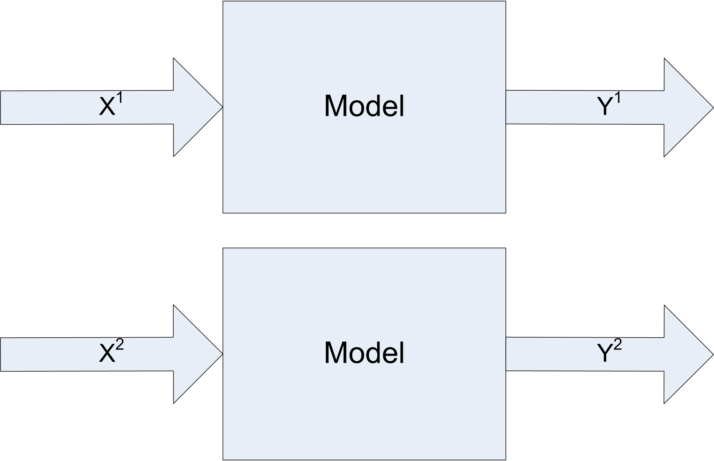
Naturally, when you have different design configurations, you would like to know which configurations are better than the others. Since the simulations are driven by random variables, the outputs from each configuration (e.g. \(Y^1, Y^2\)) are also random variables. The estimate of the performance of each system must be analyzed using statistical methods to ensure that the differences in performance are not simply due to sampling error. In other words, you want to be confident that one system is statistically better (or worse) than the other system.
5.7.1 Comparing Two Systems
The techniques for comparing two systems via simulation are essentially the same as that found in books that cover the statistical analysis of two samples (e.g. (Montgomery and Runger 2006)). This section begins with a review of these methods. Assume that samples from two different populations (system configurations) are available:
\[X_{11}, X_{12},\ldots, X_{1 n_1} \ \ \text{a sample of size $n_1$ from system configuration 1}\]
\[X_{21}, X_{22},\ldots, X_{2 n_2} \ \ \text{a sample of size $n_2$ from system configuration 2}\]
The samples represent a performance measure of the system that will be used in a decision regarding which system configuration is preferred. For example, the performance measure may be the average system throughput per day, and you want to pick the design configuration that has highest throughput.
Assume that each system configuration has an unknown population mean for the performance measure of interest, \(E[X_1] = \theta_1\) and \(E[X_2] = \theta_2\). Thus, the problem is to determine, with some statistical confidence, whether \(\theta_1 < \theta_2\) or alternatively \(\theta_1 > \theta_2\). Since the system configurations are different, an analysis of the situation of whether \(\theta_1 = \theta_2\) is of less relevance in this context.
Define \(\theta = \theta_1 - \theta_2\) as the mean difference in performance between the two systems. Clearly, if you can determine whether \(\theta >\) 0 or \(\theta <\) 0 you can determine whether \(\theta_1 < \theta_2\) or \(\theta_1 > \theta_2\). Thus, it is sufficient to concentrate on the difference in performance between the two systems.
Given samples from two different populations, there are a number of ways in which the analysis can proceed based on different assumptions concerning the samples. The first common assumption is that the observations within each sample for each configuration form a random sample. That is, the samples represent independent and identically distributed random variables. Within the context of simulation, this can be easily achieved for a given system configuration by performing replications. For example, this means that \(X_{11}, X_{12},\ldots, X_{1 n_1}\) are the observations from \(n_1\) replications of the first system configuration. A second common assumption is that both populations are normally distributed or that the central limit theorem can be used so that sample averages are at least approximately normal.
To proceed with further analysis, assumptions concerning the population variances must be made. Many statistics textbooks present results for the case of the population variance being known. In general, this is not the case within simulation contexts, so the assumption here will be that the variances associated with the two populations are unknown. Textbooks also present cases where it is assumed that the population variances are equal. Rather than making that assumption it is better to test a hypothesis regarding equality of population variances.
The last assumption concerns whether or not the two samples can be considered independent of each other. This last assumption is very important within the context of simulation. Unless you take specific actions to ensure that the samples will be independent, they will, in fact, be dependent because of how simulations use (re-use) the same random number streams. The possible dependence between the two samples is not necessarily a bad thing. In fact, under certain circumstance it can be a good thing.
The following sections first presents the methods for analyzing the case of unknown variance with independent samples. Then, we focus on the case of dependence between the samples. Finally, how to use the JSL to do the work of the analysis will be illustrated.
5.7.1.1 Analyzing Two Independent Samples
Although the variances are unknown, the unknown variances are either equal or not equal. In the situation where the variances are equal, the observations can be pooled when developing an estimate for the variance. In fact, rather than just assuming equal or not equal variances, you can (and should) use an F-test to test for the equality of variance. The F-test can be found in most elementary probability and statistics books (see (Montgomery and Runger 2006)).
The decision regarding whether \(\theta_1 < \theta_2\) can be addressed by forming confidence intervals on \(\theta = \theta_1 - \theta_2\). Let \(\bar{X}_1\), \(\bar{X}_2\), \(S_1^2\), and \(S_2^2\) be the sample averages and sample variances based on the two samples (k = 1,2):
\[\bar{X}_k = \dfrac{1}{n_k} \sum_{j=1}^{n_k} X_{kj}\]
\[S_k^2 = \dfrac{1}{n_k - 1} \sum_{j=1}^{n_k} (X_{kj} - \bar{X}_k)^2\]
An estimate of \(\theta = \theta_1 - \theta_2\) is desired. This can be achieved by estimating the difference with \(\hat{D} = \bar{X}_1 - \bar{X}_2\). To form confidence intervals on \(\hat{D} = \bar{X}_1 - \bar{X}_2\) an estimator for the variance of \(\hat{D} = \bar{X}_1 - \bar{X}_2\) is required. Because the samples are independent, the computation of the variance of the difference is:
\[Var(\hat{D}) = Var(\bar{X}_1 - \bar{X}_2) = \dfrac{\sigma_1^2}{n_1} + \dfrac{\sigma_2^2}{n_2}\]
where \(\sigma_1^2\) and \(\sigma_2^2\) are the unknown population variances. Under the assumption of equal variance, \(\sigma_1^2 = \sigma_2^2 =\sigma^2\), this can be written as:
\[Var(\hat{D}) = Var(\bar{X}_1 - \bar{X}_2) = \dfrac{\sigma_1^2}{n_1} + \dfrac{\sigma_2^2}{n_2} = \sigma^2 (\dfrac{1}{n_1} + \dfrac{1}{n_2})\]
where \(\sigma^2\) is the common unknown variance. A pooled estimator of \(\sigma^2\) can be defined as:
\[S_p^2 = \dfrac{(n_1 - 1)S_1^2 + (n_2 - 1)S_2^2}{n_1 + n_2 - 2}\]
Thus, a (\(1 - \alpha\))% confidence interval on \(\theta = \theta_1 - \theta_2\) is:
\[\hat{D} \pm t_{\alpha/2 , v} s_p \sqrt{\dfrac{1}{n_1} + \dfrac{1}{n_2}}\]
where \(v = n_1 + n_2 - 2\). For the case of unequal variances, an approximate (\(1 - \alpha\))% confidence interval on \(\theta = \theta_1 - \theta_2\) is given by:
\[\hat{D} \pm t_{\alpha/2 , v} \sqrt{S_1^2/n_1 + S_2^2/n_2}\]
where \[v = \Biggl\lfloor \frac{(S_1^2/n_1 + S_2^2/n_2)^2}{\frac{(S_1^2/n_1)^2}{n_1 +1} + \frac{(S_2^2/n_2)^2}{n_2 + 1}} - 2 \Biggr\rfloor\]
Let \([l, u]\) be the resulting confidence interval where \(l\) and \(u\) represent the lower and upper limits of the interval with by construction \(l < u\). Thus, if \(u < 0\), you can conclude with (\(1 - \alpha\))% confidence that \(\theta = \theta_1 - \theta_2 < 0\) (i.e. that \(\theta_1 < \theta_2\)). If \(l > 0\), you can conclude with (\(1 - \alpha\))% that \(\theta = \theta_1 - \theta_2 > 0\) (i.e. that \(\theta_1 > \theta_2\)). If \([l, u]\) contains 0, then no conclusion can be made at the given sample sizes about which system is better. This does not indicate that the system performance is the same for the two systems. You know that the systems are different. Thus, their performance will be different. This only indicates that you have not taken enough samples to detect the true difference. If sampling is relatively cheap, then you may want to take additional samples in order to discern an ordering between the systems.
Two configurations are under consideration for the design of an airport security checkpoint. A simulation model of each design was made. The replication values of the throughput per minute for the security station for each design are provided in the following table.
| Design 1 | Design 2 | |
|---|---|---|
| 1 | 10.98 | 8.93 |
| 2 | 8.87 | 9.82 |
| 3 | 10.53 | 9.27 |
| 4 | 9.40 | 8.50 |
| 5 | 10.10 | 9.63 |
| 6 | 10.28 | 9.55 |
| 7 | 8.86 | 9.30 |
| 8 | 9.00 | 9.31 |
| 9 | 9.99 | 9.23 |
| 10 | 9.57 | 8.88 |
| 11 | 8.05 | |
| 12 | 8.74 | |
| \(\bar{x}\) | 9.76 | 9.10 |
| \(s\) | 0.74 | 0.50 |
| \(n\) | 10 | 12 |
Assume that the two simulations were run independently of each other, using different random numbers. Recommend the better design with 95% confidence.
According to the results:
\[\hat{D} = \bar{X}_1 - \bar{X}_2 = 9.76 - 9.1 = 0.66\]
In addition, we should test if the variances of the samples are equal. This requires an \(F\) test, with \(H_0: \sigma_{1}^{2} = \sigma_{2}^{2}\) versus \(H_1: \sigma_{1}^{2} \neq \sigma_{2}^{2}\). Based on elementary statistics, the test statistic is: \(F_0 = S_{1}^{2}/S_{1}^{2}\). The rejection criterion is to reject \(H_0\) if \(F_0 > f_{\alpha/2, n_1-1, n_2 -1}\) or \(F_0 < f_{1-\alpha/2, n_1-1, n_2 -1}\), where \(f_{p, u, v}\) is the upper percentage point of the \(F\) distribution. Assuming a 0.01 significance level for the \(F\) test, we have \(F_0 = (0.74)^{2}/(0.50)^{2} = 2.12\). Since \(f_{0.005, 9, 11} = 5.54\) and \(f_{0.995, 9, 11} = 0.168\), there is not enough evidence to conclude that the variances are different at the 0.01 significance level. The value of \(f_{p, u, v}\) can be determined in as F.INV.RT(p, u, v). Note also that \(f_{1-p, u, v} = 1/f_{p, v, u}\). In \(R\), the formula is \(f_{p, u, v} = qt(1-p, u,v)\), since \(R\) provides the quantile function, not the upper right tail function.
Since the variances can be assumed equal, we can use the pooled variance, which is:
\[\begin{aligned} S_p^2 & = \dfrac{(n_1 - 1)S_1^2 + (n_2 - 1)S_2^2}{n_1 + n_2 - 2}\\ & = \dfrac{(10 - 1)(0.74)^2 + (12 - 1)(0.5)^2}{12 + 10 - 2} \\ & = 0.384\end{aligned}\]
Thus, a (\(1 -0.05\))% confidence interval on \(\theta = \theta_1 - \theta_2\) is:
\[\begin{aligned} \hat{D} & \pm t_{\alpha/2 , v} s_p \sqrt{\dfrac{1}{n_1} + \dfrac{1}{n_2}} \\ 0.66 & \pm t_{0.025 , 20} (\sqrt{0.384}) \sqrt{\dfrac{1}{10} + \dfrac{1}{12}} \\ 0.66 & \pm (2.086)(0.6196)(0.428) \\ 0.66 & \pm 0.553\end{aligned}\]
where \(v = n_1 + n_2 - 2 = 10 + 12 - 2 = 20\). Since this results in an interval \([0.10, 1.21]\) that does not contain zero, we can conclude that design 1 has the higher throughput with 95% confidence.
The confidence interval can assist in making decisions regarding relative performance of the systems from a statistically significant standpoint. However, if you make a conclusion about the ordering of the system, it still may not be practically significant. That is, the difference in the system performance is statistically significant but the actual difference is of no practical use. For example, suppose you compare two systems in terms of throughput with resulting output \(\bar{X}_1\) = 5.2 and \(\bar{X}_2\) = 5.0 with the difference statistically significant. While the difference of 0.2 may be statistically significant, you might not be able to achieve this in the actual system. After all, you are making a decision based on a model of the system not on the real system. If the costs of the two systems are significantly different, you should prefer the cheaper of the two systems since there is no practical difference between the two systems. The fidelity of the difference is dependent on your modeling assumptions. Other modeling assumptions may overshadow such a small difference.
The notion of practical significance is model and performance measure dependent. One way to characterize the notion of practical significance is to conceptualize a zone of performance for which you are indifferent between the two systems.
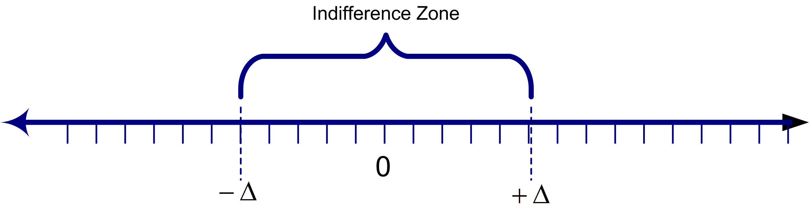
Figure 5.22 illustrates the concept of an indifference zone around the difference between the two systems. If the difference between the two systems falls in this zone, you are indifferent between the two systems (i.e. there is no practical difference).
Using the indifference zone to model the notion of practical significance, if \(u < -\Delta\), you can conclude confidence that \(\theta_1 < \theta_2\), and if \(l > \Delta\), you can conclude with confidence that \(\theta_1 > \theta_2\). If \(l\) falls within the indifference zone and \(u\) does not (or vice versa), then there is not enough evidence to make a confident conclusion. If \([l,u]\) is totally contained within the indifference zone, then you can conclude with confidence that there is no practical difference between the two systems.
5.7.1.2 Analyzing Two Dependent Samples
In this situation, continue to assume that the observations within a sample are independent and identically distributed random variables; however, the samples themselves are not independent. That is, assume that the \((X_{11}, X_{12},\ldots, X_{1n_1})\) and \((X_{21}, X_{22}, \ldots, X_{2n_2})\) from the two systems are dependent.
For simplicity, suppose that the difference in the configurations can be implemented using a simple parameter change within the model. For example, the mean processing time is different for the two configurations. First, run the model to produce \((X_{11}, X_{12}, \ldots, X_{1n_1})\) for configuration 1. Then, change the parameter and re-executed the model to produce \((X_{21}, X_{22}, \ldots, X_{2n_2})\) for configuration 2.
Assuming that you did nothing with respect to the random number streams, the second configuration used the same random numbers that the first configuration used. Thus, the generated responses will be correlated (dependent). In this situation, it is convenient to assume that each system is run for the same number of replications, i.e. \(n_1\) = \(n_2\) = n. Since each replication for the two systems uses the same random number streams, the correlation between \((X_{1,j}, X_{2,j})\) will not be zero; however, each pair will still be independent across the replications. The basic approach to analyzing this situation is to compute the difference for each pair:
\[D_j = X_{1j} - X_{2j} \ \ \text{for} \; j = 1,2,\ldots,n\]
The \((D_1, D_2, \ldots, D_n)\) will form a random sample, which can be analyzed via traditional methods. Thus, a (\(1 - \alpha\))% confidence interval on \(\theta = \theta_1 - \theta_2\) is:
\[\bar{D} = \dfrac{1}{n} \sum_{j=1}^n D_j\]
\[S_D^2 = \dfrac{1}{n-1} \sum_{j=1}^n (D_j - \bar{D})^2\]
\[\bar{D} \pm t_{\alpha/2, n-1} \dfrac{S_D}{\sqrt{n}}\]
The interpretation of the resulting confidence interval \([l, u]\) is the same as in the independent sample approach. This is the paired-t confidence interval presented in statistics textbooks.
Assume that the two simulations were run dependently using common random numbers. Recommend the better design with 95% confidence.
Assume that the two simulations were run dependently using common random numbers. Recommend the better design with 95% confidence.
| Design 1 | Design 2 | Difference | |
|---|---|---|---|
| 1 | 52.56 | 49.92 | 2.64 |
| 2 | 48.77 | 47.08 | 1.69 |
| 3 | 53.49 | 50.62 | 2.87 |
| 4 | 50.60 | 48.45 | 2.15 |
| 5 | 51.60 | 49.20 | 2.40 |
| 6 | 51.77 | 49.33 | 2.44 |
| 7 | 51.09 | 48.81 | 2.27 |
| 8 | 53.51 | 50.64 | 2.88 |
| 9 | 47.44 | 46.08 | 1.36 |
| 10 | 47.94 | 46.45 | 1.48 |
| \(\bar{x}\) | 50.88 | 48.66 | 2.22 |
| \(s\) | 2.18 | 1.64 | 0.55 |
| \(n\) | 10 | 10 | 10 |
According to the results:
\[\bar{D} = \bar{X}_1 - \bar{X}_2 = 50.88 - 48.66 = 2.22\]
Also, we have that \(S_D^2 = (0.55)^2\). Thus, a (\(1 -0.05\))% confidence interval on \(\theta = \theta_1 - \theta_2\) is:
\[\begin{aligned} \hat{D} & \pm t_{\alpha/2, n-1} \dfrac{S_D}{\sqrt{n}}\\ 2.22 & \pm t_{0.025 , 9} \dfrac{0.55}{\sqrt{10}}\\ 2.22 & \pm (2.261)(0.1739)\\ 2.22 & \pm 0.0.393\end{aligned}\]
Since this results in an interval \([1.827, 2.613]\) that does not contain zero, we can conclude that design 1 has the higher throughput with 95% confidence.
Of the two approaches (independent versus dependent) samples, the latter is much more prevalent in simulation contexts. The approach is called the method of common random numbers (CRN) and is a natural by product of how most simulation languages handle their assignment of random number streams.
To understand why this method is the preferred method for comparing two systems, you need to understand the method’s affect on the variance of the estimator. In the case of independent samples, the estimator of performance was \(\hat{D} = \bar{X}_1 - \bar{X}_2\). Since
\[\begin{aligned} \bar{D} & = \dfrac{1}{n} \sum_{j=1}^n D_j \\ & = \dfrac{1}{n} \sum_{j=1}^n (X_{1j} - X_{2j}) \\ & = \dfrac{1}{n} \sum_{j=1}^n X_{1j} - \dfrac{1}{n} \sum_{j=1}^n X_{2j} \\ & = \bar{X}_1 - \bar{X}_2 \\ & = \hat{D}\end{aligned}\]
The two estimators are the same, when \(n_1 = n_2 = n\); however, their variances are not the same. Under the assumption of independence, computing the variance of the estimator yields:
\[V_{\text{IND}} = Var(\bar{X}_1 - \bar{X}_2) = \dfrac{\sigma_1^2}{n} + \dfrac{\sigma_2^2}{n}\]
Under the assumption that the samples are not independent, the variance of the estimator is:
\[V_{\text{CRN}} = Var(\bar{X}_1 - \bar{X}_2) = \dfrac{\sigma_1^2}{n} + \dfrac{\sigma_2^2}{n} - 2\text{cov}(\bar{X}_1, \bar{X}_2)\]
If you define \(\rho_{12} = corr(\bar{X}_1, \bar{X}_2)\), the variance for the common random number situation is:
\[V_{\text{CRN}} = V_{\text{IND}} - 2\sigma_1 \sigma_2 \rho_{12}\]
Therefore, whenever there is positive correlation \(\rho_{12} > 0\) within the pairs we have that, \(V_{\text{CRN}} < V_{\text{IND}}\).
If the variance of the estimator in the case of common random numbers is smaller than the variance of the estimator under independent sampling, then a variance reduction has been achieved. The method of common random numbers is called a variance reduction technique. If the variance reduction results in a confidence interval for \(\theta\) that is tighter than the independent case, the use of common random numbers should be preferred. The variance reduction needs to be big enough to overcome any loss in the number of degrees of freedom caused by the pairing. When the number of replications is relatively large (\(n > 30\)) this will generally be the case since the student-t value does not vary appreciatively for large degrees of freedom. Notice that the method of common random numbers might backfire and cause a variance increase if there is negative correlation between the pairs. An overview of the conditions under which common random numbers may work is given in (Law 2007).
This notion of pairing the outputs from each replication for the two system configurations makes common sense. When trying to discern a difference, you want the two systems to experience the same randomness so that you can more readily infer that any difference in performance is due to the inherent difference between the systems and not caused by the random numbers.
In experimental design settings, this is called blocking on a factor. For example, if you wanted to perform and experiment to determine whether a change in a work method was better than the old method, you should use the same worker to execute both methods. If instead, you had different workers execute the methods, you would not be sure if any difference was due to the workers or to the proposed change in the method. In this context, the worker is the factor that should be blocked. In the simulation context, the random numbers are being blocked when using common random numbers.
5.7.1.3 Using Common Random Numbers
The following explores how independent sampling and common random numbers can be implemented using the KSL. To illustrate this situation, we will utilize the familiar pallet processing example. For this situation, we will compare the performance of the system based on the time to process all pallets using two and three workers. The following code will demonstrate how to get the results based on not using common random number and based on using common random numbers. To facilitate this analysis we will use a KSLDatabaseObserver and the resulting KSLDatabase to capture the output from the simulations. In addition, we will use the MultipleComparisonAnalyzer class found in the ksl.utilities.statistics package to tabulate and compute the paired difference results. Based on our previous work with the pallet processing model, the code is very straight-forward. The following function executes the model twice. In the code, we make sure to assign different names to the experiments before running them. Of course, the number of workers is also changed. The code executes both simulation experiments sequentially and the results are stored in the KSL database.
fun withoutCommonRandomNumbers(){
val model = Model("Pallet Model Experiments")
model.numberOfReplications = 30
// add the model element to the main model
val palletWorkCenter = PalletWorkCenter(model)
// use a database to capture the response data
val kslDatabaseObserver = KSLDatabaseObserver(model)
model.experimentName = "Two Workers"
palletWorkCenter.numWorkers = 2
model.simulate()
model.experimentName = "Three Workers"
palletWorkCenter.numWorkers = 3
model.simulate()
val responseName = palletWorkCenter.totalProcessingTime.name
val db = kslDatabaseObserver.db
val expNames = listOf("Two Workers", "Three Workers")
val comparisonAnalyzer = db.multipleComparisonAnalyzerFor(expNames, responseName)
println(comparisonAnalyzer)
}Notice the second to last line of the code where we use the instance of the KSLDatabase to create an instance of the MultipleComparisonAnalyzer class based on the names of the experiments and the name of the response variable to be compared. The MultipleComparisonAnalyzer has a significant amount of output, part of which is shown here.
Statistical Summary Report
Difference Data
Name Count Average Std. Dev.
----------------------------------------------------------------------------------------------------
Two Workers - Three Workers 30 64.7723 57.8792
----------------------------------------------------------------------------------------------------
95.0% Confidence Intervals on Difference Data
Two Workers - Three Workers [43.15986335728935, 86.38476883829914]We should note the sample standard deviation on the difference, \(s_d = 57.8792\). Since the confidence interval does not contain zero, we can conclude with 95% confidence that the system with two workers has a longer time to complete the processing of the pallets. Of course, this result should be expected.
Because the simulation experiments were executed sequentially within the same invocation of the program, the random number streams in the three worker simulation continued from where the streams ended for the two worker simulation. Thus, the two experiments used different underlying random numbers and can be considered as independent sampling. To utilize common random numbers we must manipulate the streams. The following code illustrates how to implement common random numbers within the KSL.
Example 5.6 (Performing a CRN Analysis) This code example illustrates how to perform a common random number analysis for two systems by running them within the same execution frame and setting the reset start stream option to true.
fun withCommonRandomNumbers(){
val model = Model("Pallet Model Experiments")
model.numberOfReplications = 30
// add the model element to the main model
val palletWorkCenter = PalletWorkCenter(model)
// use a database to capture the response data
val kslDatabaseObserver = KSLDatabaseObserver(model)
model.resetStartStreamOption = true
model.experimentName = "Two Workers"
palletWorkCenter.numWorkers = 2
model.simulate()
model.experimentName = "Three Workers"
palletWorkCenter.numWorkers = 3
model.simulate()
val responseName = palletWorkCenter.totalProcessingTime.name
val db = kslDatabaseObserver.db
val expNames = listOf("Two Workers", "Three Workers")
val comparisonAnalyzer = db.multipleComparisonAnalyzerFor(expNames, responseName)
println(comparisonAnalyzer)
}The only difference between this code and the previous code is the addition of line 9:
model.resetStartStreamOption = trueThis line tells the model to automatically reset the streams of all of the random variables (and other constructs that use streams) back to their starting point in their stream prior to executing the replications of the experiment. This causes the three worker simulation to start in the streams in the same location as the two worker simulation. This facilitates the syncronization of the use of the random numbers. In addition, there are two other methods that the KSL automatically performs to assist in syncronization. First, each random variable utilizes its own dedicated stream, by default, and secondly, at the end of each replication, the random number streams are advanced (automatically) to the next substream in their main stream. This ensures that every replication starts in the same place in the streams. The effect of common random numbers on variance reduction can be dramatic. The results for this situation are as follows:
Statistical Summary Report
Difference Data
Name Count Average Std. Dev.
---------------------------------------------------------------------------------
Two Workers - Three Workers 30 64.9215 33.0561
---------------------------------------------------------------------------------
95.0% Confidence Intervals on Difference Data
Two Workers - Three Workers [52.57814571744155, 77.26483056807177]We see the that the sample standard deviation on the difference, \(s_d = 33.0561\) for the case of common random numbers has been significantly reduced (about a 43% reduction in this case). What does this mean for the simulation analyst? First the confidence interval half-width will also be shortened. Thus, we have a tighter margin of error for the same confidence level. This may be more important when the results are closer and when it takes significantly longer to execute the models. That is, we get more precision on the estimate of the difference for no extra computing.
It is important to note that setting the reset start stream option to true as indicated here is predicated on running both models in the same program execution. If we had run the two worker model today and then changed the number of workers to 3 for a run tomorrow, the simulations would have used the same random number streams (common random numbers by default). If we had saved the results in the database and reattached the same database to the execution, we would capture the results from both runs (just like we did in this example). Thus, we would still have used common random numbers. You need to be careful if you take this approach not to over write your earlier results by properly utilizing the KSL database functionality.
5.7.2 Concepts for Comparing Systems
The analysis of multiple systems stems from a number of objectives. First, you may want to perform a sensitivity analysis on the simulation model. In a sensitivity analysis, you want to measure the effect of small changes to key input parameters to the simulation. For example, you might have assumed a particular arrival rate of customers to the system and want to examine what would happen if the arrival rate decreased or increased by 10%. Sensitivity analysis can help you to understand how robust the model is to variations in assumptions. When you perform a sensitivity analysis, there may be a number of factors that need to be examined in combination with other factors. This may result in a large number of experiments to run. Besides performing a sensitivity analysis, you may want to compare the performance of multiple alternatives in order to choose the best alternative. This type of analysis is performed using multiple comparison statistical techniques. This section will also illustrate how to perform a multiple comparison with some of the constructs of the KSL.
Suppose that you are interested in analyzing \(k\) systems based on performance measures \(\theta_i, \, i = 1,2, \ldots, k\). The goals may be to compare each of the \(k\) systems with a base case (or existing system), to develop an ordering among the systems, or to select the best system. In any case, assume that some decision will be made based on the analysis and that the risk associated with making a bad decision needs to be controlled. In order to perform an analysis, each \(\theta_i\) must be estimated, which results in sampling error for each individual estimate of \(\theta_i\). The decision will be based upon all the estimates of \(\theta_i\) (for every system). The the sampling error involves the sampling for each configuration. This compounds the risk associated with an overall decision. To see this more formally, the “curse” of the Bonferroni inequality needs to be understood.
The Bonferroni inequality states that given a set of (not necessarily independent) events, \(E_i\), which occur with probability, \(1-\alpha_i\), for \(i = 1,2,\ldots, k\) then a lower bound on the probability of the intersection of the events is given by:
\[P \lbrace \cap_{i=1}^k E_i \rbrace \geq 1 - \sum_{i=1}^k \alpha_i\]
In words, the Bonferroni inequality states that the probability of all the events occurring is at least one minus the sum of the probability of the individual events occurring. This inequality can be applied to confidence intervals, which are probability statements concerning the chance that the true parameter falls within intervals formed by the procedure.
Suppose that you have \(c\) confidence intervals each with confidence \(1-\alpha_i\). The \(i^{th}\) confidence interval is a statement \(S_i\) that the confidence interval procedure will result in an interval that contains the parameter being estimated. The confidence interval procedure forms intervals such that \(S_i\) will be true with probability \(1-\alpha_i\). If you define events, \(E_i = \lbrace S_i \text{is true}\rbrace\), then the intersection of the events can be interpreted as the event representing all the statements being true.
\[P\lbrace \text{all} \, S_i \, \text{true}\rbrace = P \lbrace \cap_{i=1}^k E_i \rbrace \geq 1 - \sum_{i=1}^k \alpha_i = 1 - \alpha_E\]
where \(\alpha_E = \sum_{i=1}^k \alpha_i\). The value \(\alpha_E\) is called the overall error probability. This statement can be restated in terms of its complement event as:
\[P\lbrace \text{one or more} \, S_i \, \text{are false} \rbrace \leq \alpha_E\]
This gives an upper bound on the probability of a false conclusion based on the procedures that generated the confidence intervals.
This inequality can be applied to the use of confidence intervals when comparing multiple systems. For example, suppose that you have, \(c = 10\), 90% confidence intervals to interpret. Thus, \(\alpha_i = 0.10\), so that
\[\alpha_E = \sum_{i=1}^{10} \alpha_i = \sum_{i=1}^{10} (0.1) = 1.0\]
Thus, \(P\lbrace \text{all} \, S_i \, \text{true}\rbrace \geq 0\) or \(P\lbrace\text{one or more} \, S_i \, \text{are false} \rbrace \leq 1\). In words, this is implying that the chance that all the confidence intervals procedures result in confidence intervals that cover the true parameter is greater than zero and less than 1. Think of it this way: If your boss asked you how confident you were in your decision, you would have to say that your confidence is somewhere between zero and one. This would not be very reassuring to your boss (or for your job!).
To combat the “curse” of Bonferroni, you can adjust your confidence levels in the individual confidence statements in order to obtain a desired overall risk. For example, suppose that you wanted an overall confidence of 95% on making a correct decision based on the confidence intervals. That is you desire, \(\alpha_E\) = 0.05. You can pre-specify the \(\alpha_i\) for each individual confidence interval to whatever values you want provided that you get an overall error probability of \(\alpha_E = 0.05\). The simplest approach is to assume \(\alpha_i = \alpha\). That is, use a common confidence level for all the confidence intervals. The question then becomes: What should \(\alpha\) be to get \(\alpha_E\) = 0.05? Assuming that you have \(c\) confidence intervals, this yields:
\[\alpha_E = \sum_{i=1}^c \alpha_i = \sum_{i=1}^c \alpha = c\alpha\]
So that you should set \(\alpha = \alpha_E/c\). For the case of \(\alpha_E = 0.05\) and \(c = 10\), this implies that \(\alpha = 0.005\). What does this do to the width of the individual confidence intervals? Since the \(\alpha_i = \alpha\) have gotten smaller, the confidence coefficient (e.g. \(z\) value or \(t\) value) used in computation of the confidence interval will be larger, resulting in a wider confidence interval. Thus, you must trade-off your overall decision error against wider (less precise) individual confidence intervals.
Because the Bonferroni inequality does not assume independent events it can be used for the case of comparing multiple systems when common random numbers are used. In the case of independent sampling for the systems, you can do better than simply bounding the error. For the case of comparing \(k\) systems based on independent sampling the overall confidence is:
\[P \lbrace \text{all}\, S_i \, \text{true}\rbrace = \prod_{i=1}^c (1 - \alpha_i)\]
If you are comparing \(k\) systems where one of the systems is the standard (e.g. base case, existing system, etc.), you can reduce the number of confidence intervals by analyzing the difference between the other systems and the standard. That is, suppose system one is the base case, then you can form confidence intervals on \(\theta_1 - \theta_i\) for \(i = 2,3,\ldots, k\). Since there are \(k - 1\) differences, there are \(c = k - 1\) confidence intervals to compare.
If you are interested in developing an ordering between all the systems, then one approach is to make all the pair wise comparisons between the systems. That is, construct confidence intervals on \(\theta_j - \theta_i\) for \(i \neq j\). The number of confidence intervals in this situation is
\[c = \binom{k}{2} = \frac{k(k - 1)}{2}\]
The trade-off between overall error probability and the width of the individual confidence intervals will become severe in this case for most practical situations.
Because of this problem a number of techniques have been developed to allow the selection of the best system (or the ranking of the systems) and still guarantee an overall pre-specified confidence in the decision. Multiple comparison procedures are described in (Goldsman and Nelson 1998) and the references therein. See also (Law 2007) for how these methods relate to other ranking and selection methods.
5.7.3 Multiple Comparison with the Best Procedures (MCB)
While it is beyond the scope of this textbook to review multiple comparison with the best (MCB) procedures, it is useful to have a basic understanding of the form of the confidence interval constructed by these procedures. To see how MCB procedures avoid part of the issues with having a large number of confidence intervals, we can note that the confidence interval is based on the difference between the best and the best of the rest. Suppose we have \(k\) system configurations to compare and suppose that somehow you knew that the \(i^{th}\) system is the best. Now, consider a confidence interval for system’s \(i\) performance metric, \(\theta_i\), of the following form:
\[ \theta_i - \max_{j \neq i} \theta_j \] This difference is the difference between the best (\(\theta_i\)) and the second best. This is because if \(\theta_i\) is the best, when we find the maximum of those remaining, it will be next best (i.e. second best). Now, let us suppose that system \(i\) is not the best. Reconsider, \(\theta_i - \max_{j \neq i} \theta_j\). Then, this difference will represent the difference between system \(i\), which is not the best, and the best of the remaining systems. In this case, because \(i\) is not the best, the set of systems considered in \(\max_{j \neq i} \theta_j\) will contain the best. Therefore, in either case, this difference:
\[ \theta_i - \max_{j \neq i} \theta_j \] tells us exactly what we want to know. This difference allows us to compare the best system with the rest of the best. MCB procedures build \(k\) confidence intervals:
\[ \theta_i - \max_{j \neq i} \theta_j \ \text{for} \ i=1,2, \dots,k \] Therefore, only \(k\) confidence intervals need to be considered to determine the best rather than, \(\binom{k}{2}\).
This form of confidence interval has also been combined with the concept of an indifference zone. Indifference zone procedures use a parameter \(\delta\) that indicates that the decision maker is indifferent between the performance of two systems, if the difference is less than \(\delta\). This indicates that even if there is a difference, the difference is not practically significant to the decision maker within this context. These procedures attempt to ensure that the overall probability of correct selection of the best is \(1-\alpha\), whenever, \(\theta_{i^{*}} - \max_{j \neq i^{*}} \theta_j > \delta\), where \(i^{*}\) is the best system and \(\delta\) is the indifference parameter. This assumes that larger is better in the decision making context. There are a number of single stage and multiple stage procedures that have been developed to facilitate decision making in this context.
One additional item of note to consider when using these procedures. The results may not be able to distinguish between the best and others. For example, assuming that we desire the maximum (bigger is better), then let \(\hat{i}\) be the index of the system found to be the largest and let \(\hat{\theta}_{i}\) be the estimated performance for system \(i\), then, these procedures allow the following:
- If \(\hat{\theta}_{i} - \hat{\theta}_{\hat{i}} + \delta \leq 0\), then we declare that system \(i\) not the best.
- If \(\hat{\theta}_{i} - \hat{\theta}_{\hat{i}} + \delta > 0\), then we can declare that system \(i\) is not statistically different from the best. In this case, system \(i\), may in fact be the best.
The computations necessary to perform many different multiple comparision procedures can be found in the MultipleComparisonAnalyzer class illustrated in Figure 5.23.
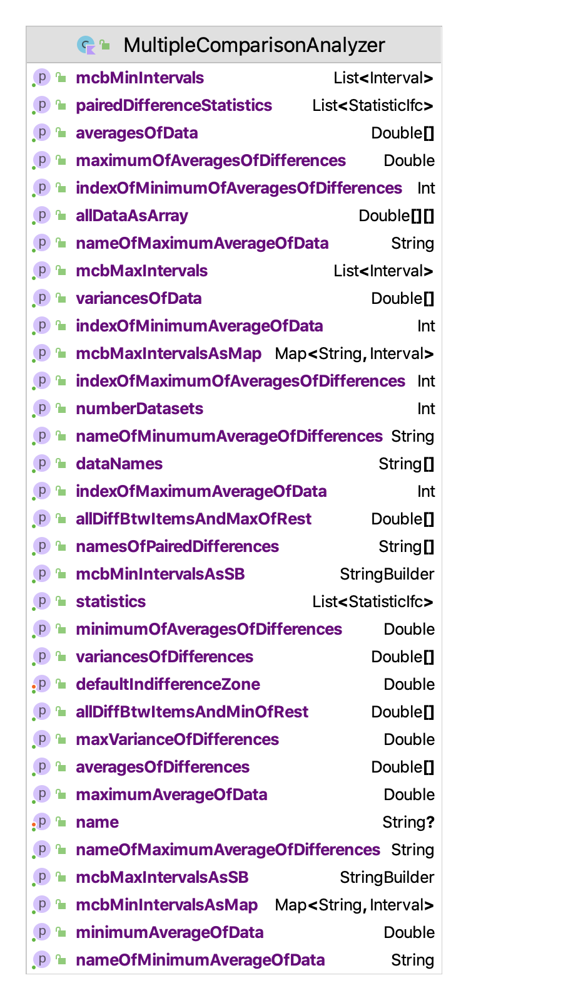
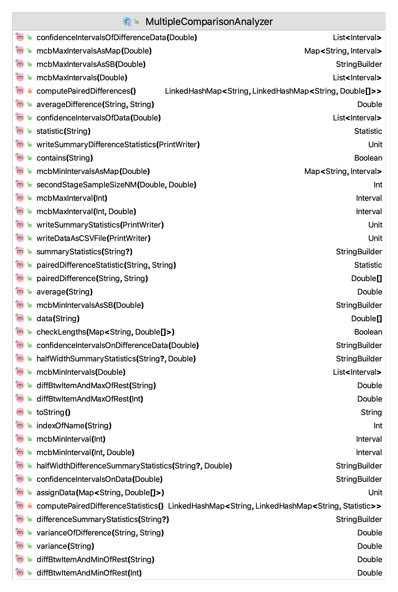
The MultipleComparisonAnalyzer class depends on having the data to be compared in the form of named arrays within a map dataMap: Map<String, DoubleArray>. Each array is associated with the name of the array via the map’s key parameter. There needs to be at least 2 data arrays, and the length of each data array must be the same. As we have seen in the previous example, the KSL facilitates extracting and organizing the simulation data in this form from the KSL database. Such data can also be readily extracted from instances of a ReplicationDataObserver or an ExperimentDataObserver. The following code illustrates setting up a MultipleComparisonAnalyzer based on arrays.
fun main() {
val data = LinkedHashMap<String, DoubleArray>()
val d1 = doubleArrayOf(63.72, 32.24, 40.28, 36.94, 36.29, 56.94, 34.10, 63.36, 49.29, 87.20)
val d2 = doubleArrayOf(63.06, 31.78, 40.32, 37.71, 36.79, 57.93, 33.39, 62.92, 47.67, 80.79)
val d3 = doubleArrayOf(57.74, 29.65, 36.52, 35.71, 33.81, 51.54, 31.39, 57.24, 42.63, 67.27)
val d4 = doubleArrayOf(62.63, 31.56, 39.87, 37.35, 36.65, 57.15, 33.30, 62.21, 47.46, 79.60)
data["One"] = d1
data["Two"] = d2
data["Three"] = d3
data["Four"] = d4
val mca = MultipleComparisonAnalyzer(data)
println(mca)
}The MultipleComparisonAnalyzer class will automatically compute the following:
- statistical summaries and confidence intervals on the individual data arrays
- statistical summaries and confidence intervals on all pair-wise differences
- the variance of the difference that is the largest
- the data set that has the smallest average and its average
- the data set that has the largest average and its average
- the pair-wise difference that is the smallest and its value
- the pair-wise difference that is the largest and its value
- multiple comparison confidence intervals based on finding the maximum value
- multiple comparison confidence intervals based on finding the minimum value
- screening intervals for best designs by constructing subsets containing the best configuration
The user can specify the indifference zone parameter to be included in the confidence interval calculations. The MultipleComparisonAnalyzer class does not utilize the probability of correct selection or assume some underlying distribution. The confidence intervals that are computed have the following forms. Define \(Y_{ij}\) as the \(i^{th}\) observation of system \(j\). Thus, \(\bar{Y}_{\cdot j}\) is the mean performance of system \(j\). Let \(\delta\) be the indifference zone parameter. When selecting the system with the largest \(\bar{Y}_{\cdot j}\) as the best, the confidence intervals for configurations \(i=1,2,\dots,k\) are computed by:
\(\min\{0, \bar{Y}_{\cdot j} - \max_{j \neq i}\bar{Y}_{\cdot j}- \delta \} \leq \theta_i - \max_{j \neq i} \theta_j \leq \max\{0, \bar{Y}_{\cdot j} - \max_{j \neq i}\bar{Y}_{\cdot j}- \delta \}\)
When selecting the system with the smallest \(\bar{Y}_{\cdot j}\) as the best, the confidence intervals for configurations \(i=1,2,\dots,k\) are computed by:
\(\min\{0, \bar{Y}_{\cdot j} - \min_{j \neq i}\bar{Y}_{\cdot j}- \delta \} \leq \theta_i - \max_{j \neq i} \theta_j \leq \max\{0, \bar{Y}_{\cdot j} - \min_{j \neq i}\bar{Y}_{\cdot j}- \delta \}\)
The results for the example code previously discussed illustrate the form of these confidence intervals.
MCB Maximum Intervals
Indifference delta: 0.0
Name Interval
One [0.0, 0.7999999999999972]
Two [-0.7999999999999972, 0.0]
Three [-5.686000000000007, 0.0]
Four [-1.2579999999999956, 0.0]
MCB Minimum Intervals
Indifference delta: 0.0
Name Interval
One [0.0, 5.686000000000007]
Two [0.0, 4.88600000000001]
Three [-4.4280000000000115, 0.0]
Four [0.0, 4.4280000000000115]Notice how the form of these confidence interval equations require that for the case of finding the maximum, systems that are candidates for the maximum have a lower interval limit of 0.0, while candidate systems that should be ruled out have an upper limit of 0.0. The reverse is true for the case of finding the minimum. Also, note that the confidence intervals (as defined here) do not have a distribution requirement for computing a test statistic value. Thus, their forms do not depend on the distributional assumptions. However, the probability of correctly selecting the best will depend upon some distributional assumptions. If the confidence interval contains zero, then it cannot be ruled out as the best. When this occurs, it is advisable to increase the sample size to see if a clear winner emerges.
Further details of such procedures can be found in (Goldsman and Nelson 1998). As a note, some of those procedures require the computation of critical values from the multivariate \(T\) distribution and Rinott’s constant. Rinott’s constant can be computed using the Rinott class within the ksl.utilities.statistics package and limited values for the multivariate \(T\) distribution are available via the MultipleComparisonAnalyzer class’s companion object. Finally, the quantiles of the Tukey distribution are available via the Tukey class located in the ksl.utilities.distributions package.
To illustrate the application of MCB methods, let us consider the two-stage Bonferroni based procedure developed by (Matejcik and Nelson 1995) and also described in (Goldsman and Nelson 1998) as well as in (Banks et al. 2005). This presentation follows the one in (Banks et al. 2005). To apply the procedure, the analyst specifies a probability of correct selection (PCS) as \((1-\alpha)\) and performs the experimentation in two-stages. The first stage is essentially a pilot set of replications from which the variability of the design configurations is estimated and used to plan the second stage of the procedure. The procedure is applicable when the data is normally distributed and can be applied if the observations are independent or if CRN has been used.
Two-Stage Bonferroni Procedure
Specify the indifference parameter, \(\delta\), PCS as \((1-\alpha)\), the initial sample size, \(n_0\), and compute \(t= t_{1-\alpha/(k-1),n_0 - 1}\)
Execute the \(n_0\) replications for each system and capture \(Y_{ij}\) as the \(i^{th}\) observation of system \(j\)
Compute \(\bar{Y}_{\cdot j}\) as the mean performance of system \(j\), for \(j=1,2,\cdots,k\). Then for all \(i \neq j\), compute the sample variance of the differences and the largest sample variance \(\hat{S}^2 = max_{i \neq j}S^{2}_{ij}\)
\[ S^{2}_{ij} = \frac{1}{n_0 - 1} \sum_{r=1}^{n_0} ((Y_{ri} - Y_{rj}) - (\bar{Y}_{\cdot i} - \bar{Y}_{\cdot j}))^2 \]
- Calculate the second stage sample size:
\[ n = max \Bigl\{ n_0, \Bigl \lceil \frac{t^2\hat{S}^2}{\delta^2} \Bigr \rceil \Bigr\} \]
Make \(n - n_0\) additional replications (or just make \(n\) by re-running). Capture \(Y_{ij}\) as the \(i^{th}\) observation of system \(j\)
Calculate the overall sample means for \(j=1, 2,\cdots, k\) for each design.
\[ \bar{Y}_{\cdot j} = \frac{1}{n}\sum_{r=1}^{n}Y_{rj} \]
- Select the system with the largest \(\bar{Y}_{\cdot j}\) as the best and if maximizing form the confidence intervals:
\(\min\{0, \bar{Y}_{\cdot j} - \max_{j \neq i}\bar{Y}_{\cdot j}- \delta \} \leq \theta_i - \max_{j \neq i} \theta_j \leq \max\{0, \bar{Y}_{\cdot j} - \max_{j \neq i}\bar{Y}_{\cdot j}- \delta \}\)
If minimizing, form the confidence intervals:
\(\min\{0, \bar{Y}_{\cdot j} - \min_{j \neq i}\bar{Y}_{\cdot j}- \delta \} \leq \theta_i - \max_{j \neq i} \theta_j \leq \max\{0, \bar{Y}_{\cdot j} - \min_{j \neq i}\bar{Y}_{\cdot j}- \delta \}\)
The MultipleComparisonAnalyzer class automatically computes everything that is needed to apply the Two-Stage Bonferroni procedure. The toString() method can be used to see all the results. The second stage sample size can be computed via the function secondStageSampleSizeNM(), and the maximum variance can be found from property, maxVarianceOfDifferences. In addition, the maximum or minimum performer can be noted from the nameOfMaximumAverageOfData and nameOfMinimumAverageOfData properties. The respective performance of the maximum and minimum via the maximumAverageOfData and minimumAverageOfData properties. Finally, the MCB intervals for each case are found from the mcbMaxIntervals(delta) and mcbMinIntervals(delta) functions respectively. Note that if \(n = n_0\) in step 5, then no additional replications are required and the PCS will still be met. (Matejcik and Nelson 1995) recommend that the initial number of replications in the first stage should be greater than or equal to 10 (\(n_0 \geq 10\)). The two-stage Bonferroni procedure is somewhat conservative in recommending the sample size requirements. If the number of replications is of concern, then the reader should consult (Banks et al. 2005) for other procedures.
The following KSL code illustrates the basic use of the MultipleComparisonAnalyzer class on some data.
fun main() {
val data = LinkedHashMap<String, DoubleArray>()
data["One"] = doubleArrayOf(63.72, 32.24, 40.28, 36.94, 36.29, 56.94, 34.10, 63.36, 49.29, 87.20)
data["Two"] = doubleArrayOf(63.06, 31.78, 40.32, 37.71, 36.79, 57.93, 33.39, 62.92, 47.67, 80.79)
data["Three"] = doubleArrayOf(57.74, 29.65, 36.52, 35.71, 33.81, 51.54, 31.39, 57.24, 42.63, 67.27)
data["Four"] = doubleArrayOf(62.63, 31.56, 39.87, 37.35, 36.65, 57.15, 33.30, 62.21, 47.46, 79.60)
val mca = MultipleComparisonAnalyzer(data)
val out = PrintWriter(System.out, true)
mca.writeDataAsCSVFile(out)
out.println()
println(mca)
println("num data sets: " + mca.numberDatasets)
println(mca.dataNames.contentToString())
val r = mca.secondStageSampleSizeNM(2.0, 0.95)
println("Second stage sampling recommendation R = $r")
}The output from the running of the code contains everything you need for a MCB analysis.
Multiple Comparison Report: Statistical Summary Report
Raw Data
Name Count Average Std. Dev.
---------------------------------------------------------------
One 10 50.0360 17.7027
Two 10 49.2360 16.2450
Three 10 44.3500 13.1509
Four 10 48.7780 15.9415
--------------------------------------------------------------
95.0% Confidence Intervals on Data
One [37.37228240333723, 62.69971759666277]
Two [37.61502264027472, 60.85697735972529]
Three [34.94237884397989, 53.7576211560201]
Four [37.37412553653087, 60.18187446346914]
Statistical Summary Report
Difference Data
Name Count Average Std. Dev.
-----------------------------------------------------------------------
One - Two 10 0.8000 2.1208
One - Three 10 5.6860 5.3384
One - Four 10 1.2580 2.3430
Two - Three 10 4.8860 3.4435
Two - Four 10 0.4580 0.3445
Three - Four 10 -4.4280 3.1384
-----------------------------------------------------------------------
95.0% Confidence Intervals on Difference Data
One - Two [-0.717163895232598, 2.317163895232595]
One - Three [1.8671698996711696, 9.504830100328828]
One - Four [-0.41806967690470764, 2.934069676904709]
Two - Three [2.422703009361264, 7.349296990638738]
Two - Four [0.21155519141551002, 0.7044448085844948]
Three - Four [-6.673063053959199, -2.182936946040797]
Max variance = 28.498048888888913
Min performer = Three
Min performance = 44.349999999999994
Max performer = One
Max performance = 50.036
Min difference = Three - Four
Min difference value = -4.427999999999998
Max difference = One - Three
Max difference value = 5.685999999999999
MCB Maximum Intervals
Indifference delta: 0.0
Name Interval
One [0.0, 0.7999999999999972]
Two [-0.7999999999999972, 0.0]
Three [-5.686000000000007, 0.0]
Four [-1.2579999999999956, 0.0]
MCB Minimum Intervals
Indifference delta: 0.0
Name Interval
One [0.0, 5.686000000000007]
Two [0.0, 4.88600000000001]
Three [-4.4280000000000115, 0.0]
Four [0.0, 4.4280000000000115]
num data sets: 4
[One, Two, Three, Four]
Second stage sampling recommendation R = 455.7.4 Screening Procedures
Assuming that the data are normally distributed (with or without CRN), screening procedures can be designed to select a subset of the system designs such that the retained subset will contain the true best system with probability greater than \(1-\alpha\). Such procedures are useful when there are a large number of designs or during automated search procedures. Once a reliable subset has been found then MCB procedures can be used to select the best from the designated subset. The following screening procedure is based on (Nelson et al. 2001).
- Step 1: Specify the PCS as \((1-\alpha)\), a common sample size, \(n \ge 2\), and compute \(t= t_{1-\alpha/(k-1),n - 1}\)
- Step 2: Execute the \(n\) replications for each system and capture \(Y_{ij}\) as the \(i^{th}\) observation of system \(j\)
- Step 3: Compute \(\bar{Y}_{\cdot j}\) as the mean performance of system \(j\), for \(j=1,2,\cdots,k\). Then for all \(i \neq j\), compute the sample variance of the differences:
\[ S^{2}_{ij} = \frac{1}{n_0 - 1} \sum_{r=1}^{n_0} ((Y_{ri} - Y_{rj}) - (\bar{Y}_{\cdot i} - \bar{Y}_{\cdot j}))^2 \]
- Step 4: If bigger is better, then place system \(i\) in the selection subset if for all \(j \ne i\): \[ \bar{Y}_{\cdot i} \ge \bar{Y}_{\cdot j} - t \frac{S_{ij}}{\sqrt{n}} \] If smaller is better, then place system \(i\) in the selection subset if for all \(j \ne i\): \[ \bar{Y}_{\cdot i} \le \bar{Y}_{\cdot j} + t \frac{S_{ij}}{\sqrt{n}} \]
Suppose we want to apply the screening procedure to the pairwise comparison data and assume that smaller is better. The screening procedure essentially says to add the system to the subset of remaining alternatives if its sample average is smaller than all the other sample means that have been adjusted by a positive quantity that accounts for sampling error. In the pairwise difference data, we have \(\bar{Y}_{\cdot i}\) and \(S_{ij}\).
Let’s take a look at a simplified example. Note that \(\hat{se}_{ij} = S_{ij}/\sqrt{n}\). If smaller is better, then place system \(i\) in the selection subset if for all \(j \ne i\), \(\bar{Y}_{\cdot i} \le \bar{Y}_{\cdot j} + t * \hat{se}_{ij}\). In this example suppose \(k=4\), \(\alpha = 0.05\), \(n=10\), \(t= t_{1-\alpha/(k-1),n - 1} = 2.5096\). In the following the sample average for system 1, \(\bar{Y}_{\cdot 1} = 50.036\) is compared to the computed upper limits for all the other configurations.
\[ \begin{aligned} \bar{Y}_{\cdot 1} = 50.036 & \overset{?}{\le} \bar{Y}_{\cdot 2} + t * \hat{se}_{12} = 49.236 + 2.5096 \times 0.6707=50.9191\\ & \overset{?}{\le} \bar{Y}_{\cdot 3} + t * \hat{se}_{13} = 44.35 + 2.5096 \times 1.6881 = 48.5865\\ & \overset{?}{\le} \bar{Y}_{\cdot 4} + t * \hat{se}_{14} = 48.778 + 2.5096 \times 0.7409 = 50.6374\\ \end{aligned} \]
Note that system 1 fails to be less than all the limits. Thus, system 1 is eliminated. This calculation is continued for all the systems to form the subset holding the remaining systems that were not eliminated during the screening process.
To apply the MultipleComparisonAnalyzer class on a KSL simulation, we can just attach a KSLDatabaseObserver instance and ask for the MultipleComparisonAnalyzer instance as illustrated in the following code for the pallet model.
Example 5.7 (Performing a MCB Analysis) In this KSL code example, three configurations are compared using CRN and MCB.
fun main() {
val model = Model("Pallet Model MCB")
// add the model element to the main model
val palletWorkCenter = PalletWorkCenter(model)
// use a database to capture the response data
val kslDatabaseObserver = KSLDatabaseObserver(model)
// simulate the model
model.experimentName = "One Worker"
palletWorkCenter.numWorkers = 1
model.resetStartStreamOption = true
model.numberOfReplications = 30
model.simulate()
model.experimentName = "Two Workers"
palletWorkCenter.numWorkers = 2
model.simulate()
model.experimentName = "Three Workers"
palletWorkCenter.numWorkers = 3
model.simulate()
val responseName = palletWorkCenter.totalProcessingTime.name
val db = kslDatabaseObserver.db
val expNames = listOf("One Worker","Two Workers", "Three Workers")
val comparisonAnalyzer = db.multipleComparisonAnalyzerFor(expNames, responseName)
println(comparisonAnalyzer)
}It should be obvious that 3 workers results in the smallest total processing time. Notice in the screening output that the 3 worker case is the only system that passes all the screening tests.
MCB Minimum Intervals
Indifference delta: 0.0
Name Interval
One Worker [0.0, 517.7287463179446]
Two Workers [0.0, 64.92148814275674]
Three Workers [-64.92148814275674, 0.0]
Min Screening Intervals
One Worker average = 943.8223691355911 Two Workers [-Infinity, 499.44125093353716]
One Worker average = 943.8223691355911 Three Workers [-Infinity, 444.40016711694113]
Two Workers average = 491.0151109604032 One Worker [-Infinity, 952.2485091087251]
Two Workers average = 491.0151109604032 Three Workers [-Infinity, 438.43696524296155]
Three Workers average = 426.09362281764646 One Worker [-Infinity, 962.1289134348857]
Three Workers average = 426.09362281764646 Two Workers [-Infinity, 503.3584533857183]
Alternatives remaining after screening for minimum:
[Three Workers]To learn more about how to simulate many scenarios, perform experiments, and optimally search for the best configuration, see Chapter 10 and Chapter 11.
5.8 Summary
This chapter described many of the statistical aspects of simulation that you will typically encounter in performing a simulation study. An important aspect of performing a correct simulation analysis is to understand the type of data associated with your performance measures (time-based versus observation-based) and how to collect/analyze such data. Then in your modeling you will be faced with specifying the time horizon of your simulation. Most situations involve finite-horizons, which are fortunately easy to analyze via the method of replications. This allows a random sample to be formed across replications and to analyze the simulation output via traditional statistical techniques.
In the case of infinite horizon simulations, things are more complicated. You must first analyze the effect of any warm up period on the performance measures and decide whether you should use the method of replication-deletion or the method of batch means.
Since you often want to use simulation to make a recommendation concerning a design configuration, an analysis across system configurations must be carefully planned. When performing your analysis, you should consider how and when to use the method of common random numbers and you should consider the impact of common random numbers on how you analyze the simulation results.
The following new KSL constructs were discussed in this chapter:
replicationEnded(): A function of model elements that can be overridden to provide logic and actions that occur at the end of a replication. An example illustrated how to use the function to collect statistics.
autoCSVReports: A parameter of the Model class that can be used to indicate whether within replication statistics and across replication statistics are written to a comma separated value files.
ReplicationDataCollector: A class that can be used to observe and collect across replication statistical values within arrays for further analysis.
ResponseTrace: A class that can be used to capture observation based and time-persistent observations to a file, recording the value of the variable and the time that the variable changed.
SimulationReporter: This class is similar to the StatisticReporter class and can be used to write out statistical summary reports containing KSL model outputs.
KSLDatabaseObserver: This class can be attached to a KSL model instance to create a database for holding within replication and across replication statistical outputs.
KSLDatabase: This class allows access to a database containing within replication and across replication statistical outputs from a KSL model run.
AcrossReplicationHalfWidthChecker: This class can be attached to a response within a KSL model and permits sequential sampling until a desired half-width criteria is met.
WelchDataFileCollector: This class captures data associated with simulation responses for the purpose of creating a Welch plot.
WelchDataFileAnalyzer: This class produces data that can be used to make a Welch plot.
WelchPlot: One of the KSL plots and facilitates the analysis of Welch data for the analysis of a warm up period for an infinite horizon simulation.
BatchingElement: A model element that can be used to facilitate the application of the batch means method for infinite horizon simulation analysis.
resetStartStreamOption: A property of the KSL Model class that can be used to cause the resetting of all random number streams to their starting point prior to a simulation run.
MultipleComparisonAnalyzer: This class facilitates the analysis and comparison of multiple simulation experiments by computer pairwise statistics and computing MCB confidence intervals. It also facilitates applying screening methods to multiple simulation runs.
Now that you have a solid understanding of how to program and model using the KSL and how to analyze your results, you are ready to explore the application of the KSL to additional modeling situations involving more complicated systems. The next chapter describes how to use the KSL for process view modeling.
5.9 Exercises
Exercise 5.1 Indicate whether or not the statistical quantity should be classified as tally-based or time-persistent.
| Classification | Description |
|---|---|
| The number of jobs waiting to be processed by a machine | |
| The number of jobs completed during a week | |
| The number in customers in queue: | |
| The time that the resource spends serving a customer | |
| The number of items in sitting on a shelf waiting to be sold | |
| The waiting time in a queue | |
| The number of patients processed during the first hour of the day | |
| The time that it takes a bus to complete its entire route | |
| The number of passengers departing the bus at Dickson street | |
| The amount of miles that a truck travel empty during a week |
Exercise 5.2 True or False A replication is the generation of one sample path which represents the evolution of the system from its initial conditions to its ending conditions.
Exercise 5.3 In a \(\underline{\hspace{3cm}}\) horizon simulation, a well defined ending time or ending condition can be specified which clearly demarks the end of the simulation.
Exercise 5.4 Which of the following are finite horizon situations? Select all that apply.
- Bank: bank doors open at 9 am and close at 5 pm
- Military battle: simulate until force strength reaches a critical value
- A factory where we are interested in measuring the steady state throughput
- A hospital emergency room which is open 24 hours a day, 7 days a week
Exercise 5.5 Consider a manufacturing system comprising two different machines and two operators. Each operator is assigned to run a single machine. Parts arrive with an exponentially distributed inter-arrival time with a mean of 4 minutes. The arriving parts are one of two types. Sixty percent of the arriving parts are Type 1 and are processed on Machine 1. These parts require the assigned operator for a one-minute setup operation. The remaining 40 percent of the parts are Type 2 parts and are processed on Machine 2. These parts require the assigned operator for a 1.5-minute (constant) setup operation. The service times (excluding the setup time) are lognormally distributed with a mean of 4.5 minutes and a variance of 1 minute for Type 1 parts and a mean of 7.5 minutes and a variance of \((1.5)^2\) minutes for Type 2 parts. The operator of the machine is required to both setup and operate the machine.
Run your model for 20000 minutes, with 10 replications. Use stream 1 for the arrival process, stream 2 for machine 1 processing, stream 3 for machine 2 processing, and stream 4 for the part type determination.
- Report the utilization of the operators. In addition, report the total time spent in the system for each type of part.
- Perform a warm up analysis on this system.
Exercise 5.6 YBox video game players arrive according to a Poisson process with rate 10 per hour to a two-person station for inspection. The inspection time per YBox set is exponentially distributed with a mean of 10 minutes. On the average 82% of the sets pass inspection. The remaining 18% are routed to an adjustment station with a single operator. Adjustment time per YBox is uniformly distributed between 7 and 14 minutes. After adjustments are made, the units are routed back to the inspection station to be retested. Assume that a part can be adjusted as many times as needed until it passes inspection. Build an simulation model of this system. Use a replication length of 30,000 minutes. Use stream 1 for the arrival process, stream 2 for the inspection time, stream 3 for the adjustment time, and stream 4 to determine if the part needs adjustment.
Perform a warm up analysis of the total time a set spends in the system and estimate the system time to within 2 minutes with 95% confidence.
Collect statistics to estimate the average number of times a given job is adjusted.
Suppose that any one job is not allowed more than two adjustments, after which time the job must be discarded. Modify your simulation model and estimate the number of discarded jobs.
Exercise 5.7 Create a model to simulate observations from a \(N(\mu, \sigma^2)\) random variable. Use your simulation to generate two independent samples of size \(n_1 = 20\) and \(n_2 = 30\) from normal distributions having \(\mu_1 = 2\), \(\sigma_1^2 = 0.64\) and \(\mu_2 = 2.2, \sigma_2^2 = 0.64\). Assume that you don’t know the true means and variances. Use the method of independent samples to test whether \(\mu_2 > \mu_1\).
Exercise 5.8 Create a model to simulate observations from a \(N(\mu, \sigma^2)\) random variable. Use your simulation to generate two independent samples of size \(n_1 = 20\) and \(n_2=30\) from normal distributions having \(\mu_1 = 2\), \(\sigma_1^2 = 0.64\), and \(\mu_2 = 2.2\), \(\sigma_2^2 = 0.36\). Assume that you don’t know the true means and variances. Use the method of independent samples to test whether \(\mu_2 > \mu_1\).
Exercise 5.9 Create a model to simulate observations from a \(N(\mu, \sigma^2)\) random variable. Use your simulation to generate two independent samples of size \(n_1 = 30\) and \(n_2 = 30\) from normal distributions having \(\mu_1 = 2\), \(\sigma_1^2 = 0.64\) and \(\mu_2 = 2.2\), \(\sigma_2^2 = 0.36\). Assume that you don’t know the true means and variances. Use the paired-t method to test whether \(\mu_2 > \mu_1\).
Exercise 5.10 Create a model to simulate observations from a \(N(\mu, \sigma^2)\) random variable. Use your simulation to generate two dependent samples of size \(n_1 = 30\) and \(n_2 = 30\) from normal distributions having \(\mu_1 = 2\), \(\sigma_1^2 = 0.64\) and \(\mu_2 = 2.2\), \(\sigma_2^2 = 0.36\). Use the method of common random number. Assume that you don’t know the true means and variances. Use the paired-t method to test whether \(\mu_2 > \mu_1\).
Exercise 5.11 Consider a M/M/1 queueing system with arrival rate of 1 customer per minute and a service rate of 1.2 customers per minute. Use stream 1 for the arrival process and stream 2 for the service process and perform the following:
Develop a 95% confidence interval for your estimate of the mean waiting time based on the data from 1 replication of 1000 customers. Discuss why this is inappropriate. How does your simulation estimate compare to the theoretical value?
How does your running average track the theoretical value? What would happen if you increased the number of customers?
Construct a Welch plot using 5 replications of the 1000 customers. Determine a warm up point for this simulation. Do you think that 1000 customers are enough?
Make an autocorrelation plot of the first 1000 customer wait times. What are the assumptions for forming the confidence interval in part (a). Is this data independent and identically distributed? What is the implication of your answer for your confidence interval in part (a)?
Use your warm up period from part (c) and generate an addition 1000 customers after the warm up point. Use the method of batch means to batch the 1000 observations into 40 batches of size 25. Make an autocorrelation plot of the 40 batch means. Compute a 95% confidence interval for the mean waiting time using the 40 batches.
Use the method of replication deletion to develop a 95% confidence interval for the mean waiting time. Use your warm period from part (c). Compare the result with that of (a) and (e) and discuss. What do you recommend for the warmup period?
Exercise 5.12 Reconsider Exercise 4.10 of Chapter 4, with stream 1 for the arrival process, stream 2 for the service process, and stream 3 for the inspection process. Suppose that after the passenger identification inspection, we now need to model a simplified version of the baggage screening process.
Part (a): Once passengers clear the identification check, they proceed to the X-ray baggage screening. Those that were denied, exit the system. For those proceeding to X-ray screening, at a minimum, it takes 1.5 minutes per passenger for the X-ray process to complete. Typically, this process takes 2.5 minutes. At the most, this process can last 7 minutes. There are two X-ray machines. Use stream 4 for the X-ray screening time.
- What is the maximum time that a passenger had to wait in line for the X-ray machine?
- What is the utilization of the X-ray machines?
Part (b): To increase security measures, a more extensive security check of passengers is performed after the baggage scan. Every 15th passenger will go through a full-body scan and manual baggage review. This inspection usually takes 5 minutes. At the least, it will take 3 minutes and at the most 10 minutes. Assume there is unlimited availability of resources to model this extra security check. Use stream 5 for the full-body scan and manual baggage review inspection.
- What is the overall average cycle time of passengers (from the time they enter the system until they are through all security points) who are selected for this check?
Exercise 5.13 You have been hired to analyze the needs for loading dock facilities at a trucking terminal. The present terminal has 4 docks on the main building. Any trucks that arrive when all docks are full are assigned to a secondary terminal, which is a short distance away from the main terminal. Assume that the arrival process is Poisson with a rate of 5 trucks each hour. There is no available space at the main terminal for trucks to wait for a dock. At the present time nearly 50% of the arriving trucks are diverted to the secondary terminal. The average service time per truck is two hours on the main terminal and 3 hours on the secondary terminal, both exponentially distributed. Two proposals are being considered. The first proposal is to expand the main terminal by adding docks so that at least 80% of the arriving trucks can be served there with the remainder being diverted to the secondary terminal. The second proposal is to expand the space that can accommodate up to 8 trucks. Then, only when the holding area is full will the trucks be diverted to secondary terminal.
Build KSL models to analyze this situation. Run the models for 20,000 minutes with a warm up period of 5,000 minutes Based on 30 replications of your simulation, answer the following questions.
For the first proposal, what is the required number of docks so that at least 80% of the arriving trucks can be served?
For the second proposal, will the specified number of spaces result in at least 80% of the arriving trucks being served at the main facility?
Use stream 1 for the time between arrivals and stream 2 for the service times.
Exercise 5.14 Two machines are being considered for processing a job within a factory. The first machine has an exponentially distributed processing time with a mean of 10 minutes. For the second machine the vendor has indicated that the mean processing time is 10 minutes but with a standard deviation of 6 minutes with a lognormal distribution.
Build KSL models to analyze this situation. Run the models for 20,000 minutes with a warm up period of 5,000 minutes Based on 30 replications of your simulation, which machine is better in terms of the average waiting time of the jobs?
Use stream 1 for the time between arrivals and stream 2 for the service times.
Exercise 5.15 SuperFastCopy wants to install self-service copiers, but cannot decide whether to put in one or two machines. They predict that arrivals will be Poisson with a rate of 30 per hour, and the time spent copying is exponentially distributed with a mean of 1.75 minutes. Because the shop is small they want the probability of 5 or more customers in the shop to be small, say less than 7%.
Build a KSL model to analyze this situation. Run the model for 20,000 minutes with a warm up period of 5,000 minutes Based on 30 replications of your simulation, make a statistically valid recommendation concerning the number of machines needed to meet the customer service requirement.
Use stream 1 for the time between arrivals and stream 2 for the service times.